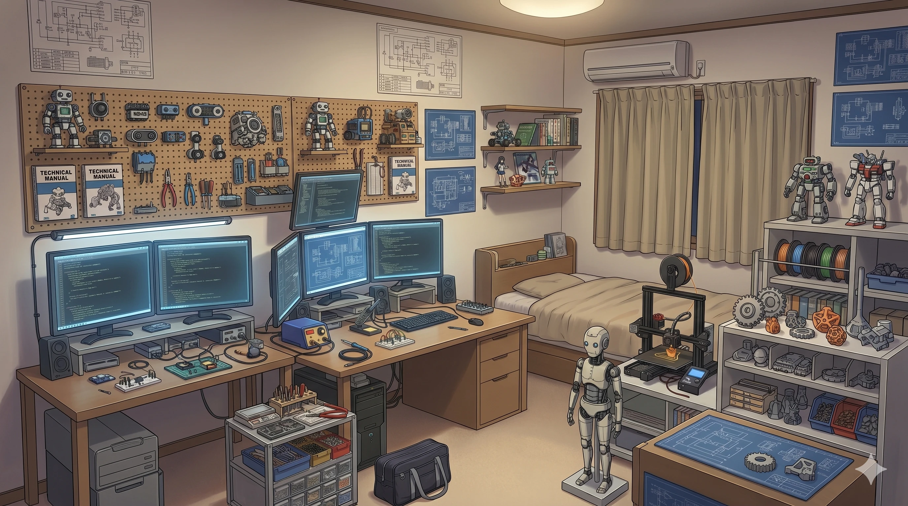
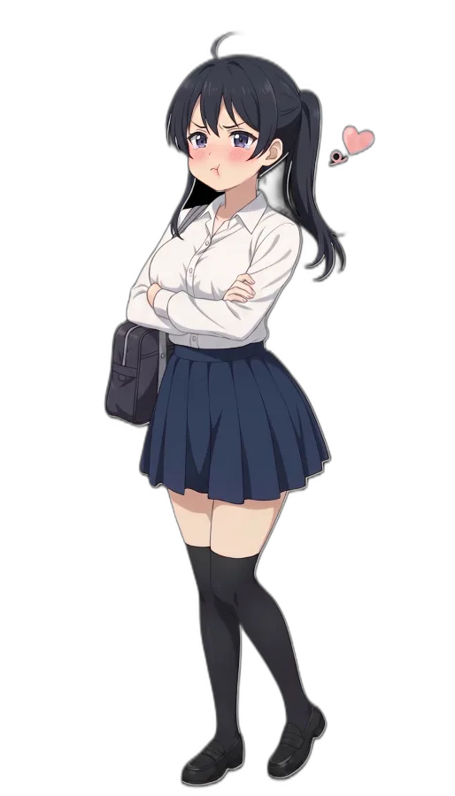
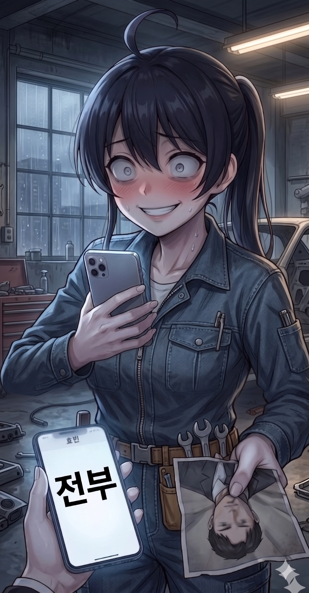
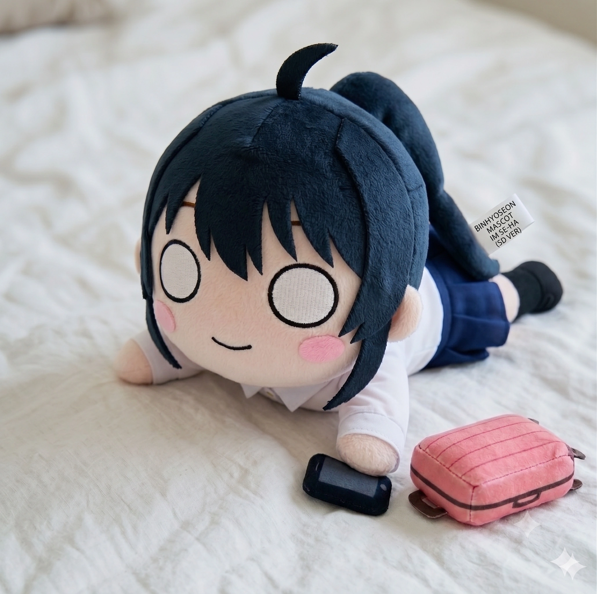

효빈교통공사 캐릭터들
| 등 장 인 물 |
1호선 | 2호선 | 3호선 | 4호선 | 5호선 | 창전선 |
|---|---|---|---|---|---|---|
 고나미 고나미 |
 하루빈 하루빈 |
 박라미 박라미 |
 다로나 다로나 |
 미소하 미소하 |
 심세이 심세이 |
|
| 6호선 | 7호선 | 8호선 | 빈효선* | |||
 라세나 라세나 |
 임세정 임세정 |
 임세하 임세하 |
 유리아 유리아 |
 전노아 전노아 |
||
|
* 빈효선: 노선 운영은 효빈교통공사가 아닌 코레일(한국철도공사)이 담당하지만, 지역 인프라 특성상 같이 묶여서 캐릭터 사업으로 진행됨. * 창전선 (본 문서 캐릭터 소속) 등 신규 노선은 개통 및 캐릭터 정식 데뷔 시점에 맞춰 틀에 추가될 예정입니다. (현재 심세이 정식 등재 완료) |
||||||
- 1. 개요
- 2. 상세 설정
- 2.1. 성격 및 특징 (공대 너드)
- 2.2. 학력 및 능력
- 2.3. 정치 성향
- 2.4. 외형 및 디자인
- 2.5. 목소리 및 성우 연기
- 3. 가족 관계 (임씨 가문 6남매)
- 3.1. 다둥이 6남매와 다문화 배경
- 3.2. K-다문화 호칭: 첫째의 특권
- 3.3. 가족 일화 및 사건 사고
- 4. 인간 관계
- 5. 러닝 개그 및 특수 설정
- 6. 여담
- 6.1. 분홍색 갸루 평행이론
- 6.2. "에? 혼혈이었어?!" (하이퍼 리얼리즘)
- 6.3. "이중언어는 사치였다" & 학점 테러
- 6.4. 혼혈 해명 자동 응답 매뉴얼
- 6.5. 식문화와 소울 간식 (feat. 바나나 혐오증)
- 6.6. [비주얼] 정비복 속에 봉인된 '중장갑'의 실체
- 6.7. [비주얼/설정] "슬림 탄력" 언니 vs "폭발적 중장갑" 동생 (7호선 자매의 난)
- 6.8. 운명적 만남: vs 유리아
- 6.9. [사건사고] 2026 HAF 포스터 모델 선거 역전극
- 6.10. 돌림자 파괴자 셋째 언니 (이름의 비밀)
- 6.11. 공대생의 '무거운 우정' 표현법 (feat. 수제 GPS 우정 팔찌)
- 6.12. 지킬 앤 하이드 급의 텐션 스위치 (공대 너드 vs 핑크빛 애교 폭격기)
- 6.13. [밈] '핑크빛 얀데레' 경보: 연애 시 발동되는 극악의 소유욕 (feat. 시각적 폭력)
- 6.14. [성우/설정] 비주얼은 세츠나(순한맛), 보이스는 카논? (feat. 선라이즈 집단 멘붕 사태)
- 6.15. [밈] 멀티버스 대환장 파티: 효빈 급행버스 vs 7호선
- 6.16. [밈/성우 장난] 보안 시스템 붕괴 사태: 시부야 카논과의 조우
- 7. 미디어 믹스 및 굿즈
1. 개요
기계 앞에서는 아웃사이더 랩을 뱉지만, 사람 앞에서는 고장 난 안드로이드처럼 뚝딱거리는 전형적인 기계공학도의 표본.
효빈권 광역전철 7호선(친환경 무가선 트램)을 상징하는 효빈교통공사 소속 마스코트 캐릭터. 2010년, 7호선이 기술적 낭만과 근본이 넘치던 '회주공업' 사철 체제에서 효빈교통공사 소속으로 전격 공영화되는 역사적인 리뉴얼 시기에, 베테랑 언니인 임세정과 함께 새로운 세대를 상징하며 화려하게 데뷔했다. 직업은 대학생이며, 효빈시 최고의 아웃풋이자 공학도들의 성지인 효빈대학교 기계공학과 1학년에 재학 중이다.
7호선의 상징색인 화사한 분홍색(#FF8899)을 메인 테마로 배정받았지만, 화려하고 인싸스러운 언니 세정이나 타 호선의 발랄한 마스코트들과는 궤를 달리한다. 겉보기엔 얌전하고 수수한 여대생 같지만, 기계, 모터, 납땜, 배터리 효율 이야기만 나오면 눈빛이 넹글 돌아버리는 중증 공대 너드이자 TMI 폭주 기관차 철덕이다. 다문화 가정(필리핀 어머니) 출신임에도 불구하고, 입만 열면 밤샘 코딩에 찌든 완벽한 K-공대생의 바이브를 풍겨 팬들에게 압도적인 현실감을 선사한다.
2. 상세 설정

2.1. 성격 및 특징 (뼛속까지 공대 너드)
전형적인 INTP (논리적인 사색가) 성향의 극단적 예시. 평소에는 구석에 처박혀 말수가 적고 자기만의 회로도 세계에 깊이 빠져 있다. 주변에서 무슨 소란이 벌어져도 "나와는 무관한 시스템 외적 변수"라며 무시하지만, 누군가 전동차 모터 구동 방식이나 신형 배터리 충전 효율, 혹은 코딩 언어에 대해 얕은 지식으로 질문을 던지면 갑자기 눈에 무서운 안광이 돌며 대학원생 뺨치는 전문 지식을 속사포로 쏟아낸다. 질문한 사람이 제발 그만해달라고 울면서 빌 때까지 멈추지 않는다.
"그건 논리적 오류인데.", "설계 단계부터 글러먹었어."라며 결론부터 때려 박는 자비 없는 팩트폭력 화법을 구사한다. 일상 대화 중에도 "내 인내심의 베어링이 마모되고 있어", "머릿속 회로가 쇼트 났으니 당분간 오프라인 모드로 전환하겠어" 같은 심각한 공대식 은어를 숨 쉬듯이 내뱉어 문과생 오빠를 경악하게 만든다.
얌전하게 굿즈를 모으는 '방구석 입덕'이 아니라, 기계를 직접 뜯고 기름때를 묻혀야 직성이 풀리는 극강의 '손덕(실전형 덕후)'이다. 그녀의 무거운 백팩 안에는 화장품 파우치 따위는 없고, 맥가이버 공구 세트, 휴대용 인두기, 테스터기, 부활의 영약 WD-40, 그리고 규격별 케이블 타이가 가득하다. 길을 걷다가 자판기나 환풍기에서 미세한 이상 소음만 들려도 즉시 보행을 멈추고 스패너를 꺼내며 추론 모드에 들어간다. 특히 기계를 막 다루는 8호선 막내 유리아가 정체불명의 비상 버튼을 만지려 하면, 평소의 굼뜬 모습은 온데간데없이 빛의 속도로 슬라이딩 태클을 날리며 절규한다. "안 돼 이 미친 특성화고야!! 그거 누르면 전체 시스템 쇼트 나서 수리비 3천만 원 깨진다고!!"

2.2. 학력 및 능력 (영장류의 감정을 이해하지 못하는 천재)
이공계 분야에 한해서는 효빈시가 낳은 천재 중의 천재다. 명문 중수여고 재학 시절, 미적분과 물리 과목은 수능이든 내신이든 단 한 번도 전교 1등을 놓친 적이 없는 압도적 기량을 자랑했다. 남들은 쳐다보기도 싫어하는 모터 감속기 회로도나 복잡한 제동 장치 3D 도면을 마치 '숨은그림찾기'나 '퍼즐 게임' 하듯 분석하며 카타르시스를 느낀다.
학업 성취도
전형적인 '수과 몰빵' 공대형 두뇌. 문제는 인간의 감정과 행간의 의미를 파악해야 하는 문과 과목에서는 지능이 거의 유인원 수준으로 퇴화한다는 점이다.
| 과목 | 등급 (내신) | 비고 |
|---|---|---|
| 수학(미적분) | 1등급 고정 | "숫자는 거짓말을 하지 않지. 인간과는 다르게." 수식 풀이를 명상 대신 즐긴다. |
| 물리학 | 1등급 압살 | 역학과 전자기학 파트는 문제를 눈으로 훑고 답을 OMR 카드에 바로 찍어내는 기염을 토했다. 물리 선생이 그녀의 풀이 과정을 보고 경악했을 정도. |
| 국어(문학) | 5등급 (...) | 임세하 인생 최대의 아킬레스건. 시험 문제: '화자가 창밖의 푸른 커튼을 보고 느낀 감정을 고르시오.' 임세하의 답안: '단열재가 들어간 두꺼운 암막 커튼이라 실내 난방 효율이 20% 이상 상승하여 논리적으로 기뻤을 것이다.' |
철도 덕력은 단연코 S랭크 (순수 메카닉·차량 성능 한정). 풍경이나 여행의 낭만을 논하는 3호선 박라미와는 철도 덕질의 결이 완전히 다르다. 세하는 오직 "어떤 소자의 모터를 썼고, 대차의 구조는 어떠하며, 가속력(km/h/s) 수치가 얼마인가"에만 피가 끓는다. 특히 과거 회주공업 시절 선배 엔지니어들이 손수 작성해 물려준 '수제 모터 정비 매뉴얼'을 전공 서적보다 더 소중한 성경처럼 모시고 다닌다.
2.3. 정치 성향
對 윤대환 (전 시장): 과학의 적, 진보를 막는 수구 적폐. (극대노)
보수냐 진보냐 하는 얄팍한 정치 이념 따위는 관심 없다. 그녀의 기준은 오직 '과학 기술에 대한 존중'이다. 윤대환 전 시장이 재임 시절, 당시 막강한 기술력을 자랑하던 회주공업의 7호선 트램을 가리켜 "시대에 뒤떨어지고 교통 체증만 유발하는 흉물 고철 덩어리"라며 모욕하고 노선을 완전히 폐지하려 했던 만행을 뼛속 깊이 새기고 용서하지 않는다. 세하에게 트램 시스템은 회주공업 시절부터 이어져 온 수많은 공학자의 땀방울이 서린 '공학적 아름다움의 결정체'이자 친환경 교통의 미래다. 고로 윤대환은 '기술의 가치와 낭만을 모르는 무식한 문과적 꼰대' 취급하며 혐오한다.
對 박효빈 (현 시장): 맹목적 숭배. (공학의 신, 시스템적 구원자)
박효빈 시장이 고철 취급받던 7호선을 폐지하는 대신, 대규모 예산을 과감하게 투입해 초대용량 배터리를 탑재한 '최신형 친환경 무가선 저상 트램'으로 완벽하게 부활시킨 점을 눈물 흘리며 찬양한다.
사실 공학도인 세하도 "회주공업 시절 엔지니어들의 훌륭한 기술력과 업계 최고 수준의 직원 대우"에 대해서는 누구보다 잘 알고 자부심을 느꼈다. 하지만 사기업 특성상 자본의 논리나 정치인(윤대환)의 폐선 협박 같은 거대한 외부 요인 앞에서는 회사가 속절없이 흔들릴 수밖에 없다는 것을 보며 뼈저린 무력감을 느꼈었다. 그런데 박 시장이 7호선을 효빈교통공사 소속으로 공영화하여 완벽한 시스템적 안정성을 부여하고 기술 개발에 날개를 달아주었기에, 세하에게 박효빈은 "진정한 공학의 진가와 시스템의 안정성을 아는 최고존엄 트램의 신"이다. 투표권은 무조건 박효빈을 향한다.
2.4. 외형 및 디자인 (작업 편의성 100% 실용주의)
7호선의 상징색은 분홍색(#FF8899)이지만, 세하의 공식 일러스트에서는 리본이나 액세서리 같은 분홍색 포인트를 눈 씻고 찾아봐도 없다. 짙은 흑남색의 부스스한 머리카락을 활동하기 편하게 대충 묶은 사이드 포니테일 스타일을 고수하며, 정수리에는 자기주장이 엄청나게 강한 바보털(아호게)이 하나 뾰족하게 솟아 있다. 팬들은 이 바보털이 캠퍼스 내 무료 와이파이나 블루투스 신호를 잡아내는 생체 안테나라고 굳게 믿고 있으며, 머리를 쓰면 이 바보털이 빙글빙글 돌아간다는 도시전설이 있다.
복장 역시 패션 따위는 개나 줘버린 극단적인 '실용주의'의 표본이다. 장식이 일절 없는 빳빳한 하얀색 와이셔츠에 오염이 덜 눈에 띄는 짙은 남색 플리츠스커트를 대충 매치했다. 특히 목 단추를 답답하다며 대충 풀어헤치고, 셔츠 소매를 팔뚝까지 거칠게 걷어붙인 모습은 언제든 기계 틈새에 팔을 집어넣고 납땜과 기름칠을 할 준비가 되어 있는 기계공학도의 완벽한 '전투 태세'를 시각적으로 보여준다.
다리에는 검은색 오버니삭스를 신어 이른바 서브컬처계의 로망인 '절대영역'을 완성했지만, 정작 누군가 치마 길이나 패션을 지적하면 본인은 미간을 찌푸리며 "맨살이 적당히 드러나야 제전(정전기 방지) 패드를 피부에 직접 붙이기 편하다. 이건 과학적인 작업 복장이다."라는 미친 소리로 받아친다. 코딩이나 정밀 설계 등 '진짜 집중'이 필요할 때는, 느슨했던 사이드 포니테일을 꽉 조여 묶고 걷어붙인 소매를 한 번 더 접어 올리는 것이 그녀만의 루틴이다.
공식 일러스트 속 세하는 한 팔을 번쩍 위로 치켜들고 세상을 다 가진 듯 환하게 웃고 있다. 언뜻 보면 캠퍼스에서 친한 동기를 반갑게 부르는 인싸 여대생 같지만, 효빈위키러들은 이 사진의 끔찍한 진실을 알고 있다. 저 표정은 사람을 보고 짓는 표정이 절대 아니다. 저것은 "박효빈 시장님이 7호선 신형 트램에 차세대 전고체 고용량 배터리팩을 선제적으로 탑재하겠다고 시정 브리핑에서 발표한 순간" 뇌관이 터지듯 솟구치는 도파민을 주체하지 못하고 "할렐루야!!! 만세!!!"를 외치는 순간을 포착한 것이다.

효빈대학교 기계공학과 과잠(Varsity Jacket)을 입고 벚꽃 흩날리는 캠퍼스를 걷는 수수한 여대생의 모습. 무심하게 든 묵직한 에코백 안에는 전공 서적이 아니라 납땜용 인두기와 부품들이 가득할 확률이 99%다.
2.5. 목소리 및 성우 연기 (AI 보이스와 광기의 스위치)
한일 양국 성우 모두 평소의 '감정선이 뚝 끊긴 AI 톤'과, 버튼이 눌렸을 때 폭주하는 '공대생의 광기' 사이의 아득한 갭 차이를 신들린 듯이 연기해 내어 덕후들의 고막을 녹이고 있다.
-
일본판 성우: 다테 사유리
평소에는 아포칼립스 세계관의 안드로이드처럼 감정과 억양이 거세된 낮은 톤으로 "출력 저하 확인. 시스템 재부팅 권장."이라며 건조하게 내뱉는다. 하지만 새로운 스펙의 기계를 발견하거나, 3일 밤새워 짠 코딩이 에러 없이 완벽하게 돌아갔을 때 발생하는 이른바 '사유리 버그(Sayuri Bug)'가 발동하면, 성우 본인 특유의 통제 불가능한 하이 텐션이 뚫고 나와 "우히힛! 이거 완전 쩔어!! 회로도 폼 미쳤따아아아!!!"라며 삑사리 섞인 괴성을 지른다. 평소의 무뚝뚝함과 이 폭발적인 귀여움의 갭 모에 덕분에 일본 철덕 팬덤에서 독보적인 지지율을 자랑한다. -
한국판 성우: 방연지
한국어판은 보다 현실적이고 처절한 '밤샘 코딩과 카페인에 찌든 K-공대생'의 톤을 완벽하게 구현했다. 입에 퍼지바(초코바)를 물고 웅얼거리듯 "아... 컴파일 에러 또 났네... 죽고 싶다..."라고 읊조리는 하이퍼 리얼리즘 연기가 압권이다. 특히 애니메이션 버퍼링이 걸린다며 분노한 둘째 오빠 세현이 공유기 전원을 냅다 뽑아버렸을 때 튀어나오는 "아 미친 씹덕 놈아!!! 내 데이터아아악!!!" 하는 영혼 밑바닥부터 끌어올린 분노의 사자후는, 대한민국 모든 이공계열 학생들의 심금을 울리며 수많은 유튜브 쇼츠 짤방과 대학생들의 기상 알람음으로 박제되었다.
2.6. 작중 행적
본편 애니메이션인 《철도부! - 애프터 스쿨 미라클 -》을 비롯하여 각종 미디어 믹스(극장판, 숏폼 애니메이션 등)에서 임세하가 남긴 눈물겨운 공대 너드의 발자취를 다루는 문단. 기계 앞에서는 속사포 랩을 뱉고 영장류(?) 앞에서는 고장 나는 그녀의 다이내믹한 족적을 확인할 수 있다.
3. 가족 관계 (임씨 가문 6남매)
- 세하 방 문 앞에 붙어있는 경고문(...)
효빈광역시의 독특한 인구통계학적 특성인 다문화 특구를 관통하는 7호선의 상징성을 반영하여, 필리핀 다문화 가정의 6남매라는 아주 입체적이고 왁자지껄한 가족 서사를 지니고 있다. 7살 차이 연상연하 부부와 개성 넘치는 6남매가 모인 덕분에 집안에 정적이 흐르는 날이 없다.
3.1. 가족 관계 (중보로 6남매 대환장 파티)

뒷줄부터 인자한 미소로 회로 기판을 들고 있는 용접공 아버지 임진욱과 절대 권력자 어머니 마리아, 그리고 그 우측으로 초록색 옷을 입고 소파에 앉아 있는 우리의 공대 너드 세하의 모습이 보인다.
소파 앞 바닥에는 탕후루를 들고 셀카를 찍는 막내 세빈과 모바일 가챠 확률을 계산 중인 오빠 세현, 그리고 동생의 납땜용 인두기를 압수해서? 대신 들고 해맑게 웃고 있는 듬직한 소년가장 큰언니 세정이 자리하고 있다.
그 와중에 셋째 선아는 어디 갔나 했더니, 동생들이 또 기계를 터뜨리거나 사고를 칠까 봐 뒤에서 노심초사 지켜보는 중이다.(...)
👨 아버지: 임진욱 (Im Jin-wook)
- 임세하의 기계 덕후 유전자를 물려준 장본인. 연하 아내에게 잡혀 살지만 세하의 든든한 아군.
취미: 현장에서 버려진 고장 난 인버터 수거해서 세하 방 앞에 선물로 두고 가기.
👩 어머니: 마리아 델로스 산토스 (Maria de los Santos)
- 임씨 가문 절대 권력자. 화나면 타갈로그어 속사포 잔소리를 시전함. 세하의 납땜 인두기 압수 전문.
특기: 6남매가 단체로 사고 칠 때 등짝 스매싱으로 드럼 비트 쪼개기.
👩 첫째: 임세정 (30세)
효빈과학대 철도운영과 / 7호선 역무원 대리
CV: 윤미나 / 스즈키 아이나
7호선을 지켜낸 분홍색 잔다르크. 뼛속까지 ESTJ인 6남매의 소년 가장.
👨 둘째: 임세현 (26세)
효빈대 사회복지경영 / 방구석 오타쿠
CV: 이경태 / 후쿠야마 준
유일한 문과 청일점. 확통 천재적 재능을 모바일 가챠 계산에 낭비함.
👩 셋째: 임선아 (23세)
평천대 유아교육과 / 가문 분쟁조정위원장
CV: 김하루 / 혼도 카에데
고모의 독단적 작명으로 돌림자 파괴. 씹덕과 기계 너드 사이의 프로 중재러.
👧 넷째: 임세하 (20세)
효빈대 기계공학과 / 7호선 마스코트
CV: 방연지 / 다테 사유리
기계 앞에서는 폭풍 랩, 사람 앞에서는 고장나는 INTP 컴덕 안드로이드.
👧 다섯째: 임세연 (18세)
효빈고 문과 / 집안 내 정상인 포지션
CV: 조경이 / 토미타 미유
고데기가 납땜 인두기로 마개조된 걸 보고 절규하는 불쌍한 일반인 여고생.
👧 여섯째: 임세빈 (15세)
효빈중학교 / 급식체 마스터
CV: 장예나 / 토야마 나오
이국적인 외모로 "마라탕 개마렵다"를 뱉는 K-여중생. 세하의 발명품 1호 실험체.
3.2. K-다문화 호칭: 첫째의 특권
어머니의 문화적 배경이 한국식으로 패치되어, 집안 내에서 형제자매를 부를 때 '호칭(필리핀어/한국어) + 이름'을 결합하는 독특하고 철저한 위계질서가 존재한다.
- "아테(Ate) 세정" / "큰언니": 밑의 다섯 동생이 절대권력자인 큰언니를 부를 때 쓰는 명칭. 세하가 허락 없이 7호선 제어판을 뜯어보려다 걸렸을 땐 다급하게 "아테 세정!! 살려줘!!"라며 외친다.
- "꾸야(Kuya) 세현" / "오빠": 동생들이 오빠를 부를 때 쓰는 명칭. 주로 세하가 방문을 열고 "꾸야 세현, 나 지금 거실 공유기 대역폭 제한 테스트할 건데 애니 버퍼링 걸려도 내 알 일 아님~" 하고 도발할 때 쓴다.
- "아테(Ate) 선아" / "언니": 넷째 세하부터 막내 세빈까지가 셋째를 부르는 호칭.
- "아테(Ate) 세하" / "언니": 밑의 여동생들(세연, 세빈)이 세하를 부를 때. 평소엔 언니지만, 세하가 물건을 마개조해 버리면 호칭이 "야 임세하 미친 공대 놈아!!"로 수직 낙하한다.
- 첫째·둘째의 특권: 정작 위에서 아래를 부를 땐 애칭이고 뭐고 없다. 큰언니 세정이나 오빠 세현은 밑의 동생들을 자비 없이 "야 임세하", "어이 공대생"으로 통일한다. 세하가 억울해서 항변하면 "억울하면 첫째로 태어나든가"라는 팩트 폭력이 날아와 입을 막는다.
3.3. 가족 일화 및 사건 사고
📦 발릭바얀 박스(Balikbayan Box) 테트리스 사태
필리핀 친척들에게 보낼 대형 화물 상자를 포장하던 날. 세하가 "공간 채우기 알고리즘에 어긋난다"며 나섰다가, 빈 공간에 7호선 폐전동차에서 떼온 15kg짜리 감속기 쇳덩어리를 몰래 숨겨 넣었다. 택배 기사가 수거를 거부했고, 분노한 세정 언니의 명령으로 세하는 그 쇳덩어리를 메고 우체국까지 눈물의 행군을 해야 했다.
📶 공유기 대첩 (Kuya vs. Nerd)
둘째 오빠 세현이 최애 애니메이션 최종화 라이브 방송을 시청하던 순간, 세하가 해외 오픈소스 3D 도면 수십 기가를 크롤링해버렸다. 버퍼링이 걸려 가장 중요한 고백 씬을 놓친 오빠가 피눈물을 흘리며 포효하자 세하는 "라우터 QoS에서 꾸야의 MAC 주소 대역폭을 10%로 제한했을 뿐 논리적 잘못은 없다"며 안경을 치켜올렸다. 인두기와 피규어가 난무하는 혈투는 세정이 공유기를 금고에 가둬버리면서 평정되었다.
🥟 명절 룸피아(Lumpia) 자동화 공장
명절날 필리핀식 만두 룸피아를 손으로 빚기 귀찮았던 세하가 아빠와 함께 '룸피아 자동 롤링 머신'을 개발했다. 그러나 감속비 계산 오류로 기계가 폭주, 시속 30km로 생고기 룸피아를 발사하여 막내 세빈의 안면을 강타했다. 결국 세하와 아버지는 어머니에게 국자로 맞으며 밤새 수작업을 해야 했다.
4. 인간 관계
공사 내부에서는 철저하게 직급을 지키려 애쓰지만, 자신의 바운더리에 들어온 사람에게는 집착과 애교를 아끼지 않는 극단적인 성향을 보여준다. 특히 '자신과 비슷한 상처를 공유하는 구원자'에게는 선을 아득히 넘는 얀데레적 애정을 과시한다.
4.1. 직장 및 지인
- 중수여고 전설의 철도부 라인 (박라미, 라세나): 중수여자고등학교 시절부터 동고동락한 선후배. 세하의 '내 사람 바운더리'에 가장 깊게 들어와 있는 인물들이다. 세하는 이 둘이 자신 몰래 다른 동아리원들이나 타 부서 사람들과 친하게 지내면 세상 무해하고 예쁜 얼굴로 빤히 쳐다보며 "나 빼고 재미있었어...?"라고 하루 종일 꼬리를 내린 강아지처럼 삐져 있는 무거운 사랑(...)을 보여준다. 결국 라세나가 쩔쩔매며 달래줘야 풀리지만, 그만큼 이 둘을 끔찍하게 아껴서 개인적인 기계 수리부터 맛있는 간식 조공까지 완벽하게 챙겨주는 세상 다정한 후배이자 선배다.
- 전노아 (빈효선): 중수여고 철도부를 멸망의 위기에서 건져낸 구원자이자, 세하가 '나만의 영혼의 파트너'로 여기며 극도로 애착을 갖는 05년생 찐친. 노아가 행정법규를 들이밀며 팩트 폭격을 날려도 "그래도 노아는 내가 제일 좋지?"라며 팔짱을 끼고 달라붙는 껌딱지 같은 면모를 보인다. 특히 노아의 옆자리는 무조건 자신의 지정석이라 여겨서, 노아가 다른 동기들과 너무 오래 대화하면 은근슬쩍 사이에 끼어들어 노아의 입에 퍼지바(초코빵)를 물려버리며 시선을 차단한다. 수제 GPS 우정 팔찌(...)를 선물할 정도로 내조(?)가 지극정성이다.
- 미소하 (5호선): 세하, 노아와 함께 05년생 트리오의 마지막 퍼즐. 세하의 맹목적이고 사랑스러운 우정 공세를 듬뿍 받고 있다. 학생 식당에서 소하가 다른 동기들과 밥을 먹고 있으면, 세하가 어느새 쪼르르 달려와 소하의 식판에 제일 맛있는 반찬을 얹어주며 "소하 밥 챙겨주는 건 언제나 나잖아"라며 다른 동기들을 해맑은 미소로 밀어낸다. 소하의 완벽한 통계 자료를 맹신하며 그녀를 전적으로 지지하는 든든한 아군이다.
- 임세정 (7호선 역무원 / 언니): 나이 차이가 10살이나 나는 엄격한 언니이자 사실상의 부모님. 세하가 유일하게 통제력을 상실하고 순종하는 절대 권력이다. 하지만 언니를 향한 애정도 남달라서, 세정이 다른 남매나 직장 후배를 다정하게 칭찬하면 "언니 제일 예쁜 동생은 나잖아!"라며 볼을 빵빵하게 부풀리고 질투심을 숨기지 않는다. 물론 세하가 고장 난 스크린도어 제어판에 드라이버를 갖다 대려 할 때 언니의 차가운 불호령 "임.세.하. 손 떼라." 세 글자가 떨어지면, 파블로프의 개처럼 조건반사적으로 그 자리에 얼어붙는다.
- 유리아 (8호선 막내): 세하가 '평생 내가 곁에 두고 책임져야 할 내 새끼'로 점찍은 대형 사고 유발자 막내. 초기형 AGT 모터 앞에서 맺어진 철덕 동맹이다. 유리아가 뇌를 거치지 않고 버튼부터 누르려 하면 "만지지 마 이 미친 특성화고야!! 부품값만 3천만 원이야!!"라며 슬라이딩 태클을 걸어 혼낸다. 하지만 타 부서 선배가 유리아에게 조금이라도 쓴소리를 하면 세하의 눈빛이 살벌하게 돌변한다. "우리 애 기죽게 왜 소리를 지르세요?!"라며 자신의 등 뒤로 쏙 숨기는 과보호 성향이 매우 강하다.
- 고나미 (1호선 기관사): 세하가 전사적으로 유일하게 진심으로 존경하고 따르는 '참된 하드코어 기계 덕후' 대선배. 고나미교(敎)의 충실한 신도로서 선배의 애정과 인정을 독차지하고 싶어 하는 귀여운 소유욕을 불태운다. 고나미 앞에서는 한없이 순한 양이 되어 자신의 소중한 방청윤활유(WD-40)를 기꺼이 조공으로 바친다.
4.2. 영혼의 구원자: 박효빈(03) (feat. 대환장 혐관 대서사시)
💥 제1차 대첩: 시스템 에러와 문과식 궤변의 조우 (2023년 말)
전북대와 효빈대 대학교류 대외활동 첫 조별 과제 모임. 시외버스 통학 지옥(ㅅㅂ)으로 영혼이 털려 있던 효빈과 음침한 천재 오타쿠 임세하가 조우했다. 효빈이 먼지, 경영22병신등의 무능한 근장생들에 시달린이후 멘탈이나가버려 무능한 조원들의 눈치를 보며 "제가 자료 조사 다 하겠습니다"라며 호구 선언을 하자, 시커먼 기름때 묻은 정비복을 입고 있던 세하가 고개를 들었다.
임세하: "(AI 보이스로) 가설 설정부터 완벽하게 꼬여 있어요. 기성 서류 긁어 붙이는 건 시스템 낭비일 뿐입니다. 짬처리를 당하겠다면 말리진 않겠는데... 효율은 0%에 수렴하겠네요. 이미 파이썬으로 크롤러 돌려놨으니 문과식 수작업 말고 제가 보낸 파일이나 확인하세요."
박효빈: "(속으로 빡침을 삼키며) 하하... 기계공학과라 사회과학적 방법론에 이해가 부족하신가 보네요."
- 🧠 효빈의 첫인상 독백: "교과서 좀 외웠다고 나대는 가짜 천재. 얼굴과 몸매(B87)는 사기적인데 기름때 묻은 정비복을 입고 다니는 미친 안드로이드년. 성격이 마리아나 해구 급이라 얼굴값 더럽게 못 하네. 내 멘탈을 위해 절대 엮이지 말자."
- 🧠 세하의 첫인상 독백: "무능한 조원 폐급들한테 짬처리나 당하는 노답 호구. 통학 버스에 돈 다 뜯겨서 마르기만 한 해골. 교과서 쪼가리 외웠다고 은근히 공부 잘하는 척 시전하는 꼴이 시스템 에러의 결정체다. 내 인생 시스템에 절대 들이고 싶지 않은 변수."
💥 제2차 대첩: 지역아동센터 참사와 눈물의 엑셀 (2024년 1월)
과제 모임 당일, 조원 3명은 선약을 핑계로 탈주해 버렸다. 게다가 효빈은 낮에 지역아동센터에서 연심을 품었던 '먼지'에게 "부담스러우니 연락하지 마라"며 개무시를 당하고, '경영22병신'에게 초3 수학을 짬처리 당해 멘탈이 완벽하게 가루가 된 상태였다. 카페에서 엑셀을 치던 효빈은 억울함에 눈물을 뚝뚝 흘리며 처참한 오타를 연발했다.
🔥 제3차 대첩: 대환장 진흙탕 삼국지
눈물 흘리는 효빈을 본 세하의 인공지능 회로가 경고음을 울렸다.
박효빈: "(책상을 쾅 치며) 야 이 미친 공대 안드로이드년아!!! 내가 지금 쳐 놀고 싶어서 이래?! 너만 화나?! 나도 조원 새끼들 런 친 거 개빡치고, 이거 못 끝내면 당장 이번 달 지원금 끊겨서 굶어 죽을 판이라 피 토하면서 하고 있는 거라고!! 넌 뼛속까지 T발련이냐?!"
임세하: "소리는 왜 지르는데요?! 논리적으로 반박을 못 하니까 감정적으로 윽박지르는 전형적인 문과식 회피 기동이네요!"
박효빈: "사람 개무시하는 년들한테 멘탈 털리고 억울해서 미치겠는데!! 위로는 못 해줄망정 사람을 기계 부품 취급해?! 넌 피 대신 엔진오일이 흐르냐고!!"
임세하: "멘탈이 나갔으면 오프라인 모드로 꺼져서 울고 오시든가요. 왜 멀쩡한 프로젝트 시스템까지 망가뜨리고 질질 짜는 건데요? 진짜 병신 같아요."
오늘 하루 억까를 당하며 간신히 버티던 효빈의 이성의 끈이 끊어졌다.
박효빈: "(책상을 쾅 치며) 야 이 미친 공대 안드로이드년아!!! 내가 지금 쳐 놀고 싶어서 이래?! 초3 수학도 못 푸는 돌대가리들 뒷수발 들어주고 억울해서 미치겠는데 사람을 병신 취급해?! 넌 뼛속까지 T발련이냐?!"
카페 안의 모든 시선이 집중될 만큼 쌍욕 난타전이 벌어졌다. 그러나 이 미친 난타전은 기묘한 전환점이 되었다. 세하는 쌍욕을 처먹으면서도 울먹이며 끝까지 데이터 할당량을 악으로 깡으로 채워놓고 가는 효빈의 독기에 신선한 충격(버그)을 받았고, 효빈은 은근히 뒤에서 꼽주는 빌런들과 달리 대놓고 쌍욕을 박으며 과제를 끝내는 세하의 극단적인 투명함을 내심 인정하게 되었다.
🤝 제4차 대첩: 오월동주(吳越同舟)와 무임승차 차단 프로토콜
피와 눈물, 그리고 고성이 오간 끝에 과제 파일은 기적적으로 완성되었으나, 아직 대외활동 시스템에 최종 전송(제출) 버튼은 누르지 않은 일촉즉발의 상태. 서로를 인간 이하로 취급하며 수신 차단까지 박았던 박효빈과 임세하였지만, 이 혐오의 역사에 기묘한 '진전'이 찾아오게 된다. 과제가 고퀄리티로 끝났다는 소문을 패킷 단위로 감지한 폐급 무임승차 조원들의 역습이 시작되었기 때문이다.
1. 빌런 카르텔의 역습과 'C'의 기적의 궤변
과제 마감 직전, 조별 단톡방에는 단체로 탈주했던 조원 3인방의 카톡 불이 나기 시작했다. 선약이 있다며 놀러 갔던 2명은 양심을 냉동실에 얼려두고 왔는지 "와 과제 대박! 고생하셨어요 제 이름도 당연히 들어갔죠?"라며 숟가락을 얹으려 했고, 백미는 단연 방사능 폐기물급 PPT를 던지고 런했던 조원 C의 적반하장이었다.
폐급 조원 C: "아니, 다른 두 명은 아예 안 오고 놀러 갔으니까 이름 빼는 거 인정하는데요. 저는 바쁜 와중에도 카페까지 직접 나가서 타이핑도 치고 뭐라도 하긴 했잖아요? 퀄리티가 좀 맘에 안 든다고 사람 무안 주더니, 이제 와서 제 이름까지 빼겠다는 건 에바 아닌가요? 진짜 적당히들 하세요."
표절률 98.7%짜리 쓰레기를 던져놓고 "어쨌든 나는 출석 체크 도장은 찍었으니 지분이 있다"는 기적의 셈법을 시전한 것이다. 이 뻔뻔한 궤변을 실시간으로 모니터링하던 두 괴물의 이성의 끈이 다시 한번 팽팽해졌다.
2. 최초의 한시적 동맹 가동: "공동의 적을 박멸한다"
원수보다 못한 사이였던 박효빈과 임세하였지만, 이 순간만큼은 두 사람의 뇌내 알고리즘이 완벽하게 일치했다.
- 박효빈의 사고 회로: "내 피 같은 생계형 지원금을 노리고 숟가락을 얹으려 해? 먼지년이랑 경영22병신한테 당한 걸로 모자라 이 새끼들 똥까지 치워주며 이름을 넣어달라고? 사복과의 명예를 걸고 이 도둑놈 새끼들은 절대 용서 못 한다."
- 임세하의 사고 회로: "데이터 정화 작업 완료. 무임승차 악성 패킷 3개 감지. 특히 저 'C'발 변수는 시스템에 막대한 악영향을 끼쳤으므로 영구 격리(Drop) 후 소멸시키는 것이 논리적으로 타당하다."
결국 두 사람은 차단했던 카톡을 잠시 풀고, 인류 역사상 가장 살벌한 '한시적 비밀 연합 전선'을 구축했다.
임세하: "어이 문과 호구 놈. 징징대지 말고 내 지시대로 움직이세요. 단톡방 답장하지 말고 동결(Freeze)시킵니다."
박효빈: "누가 호구라는 거야 기계년아! 말 안 해도 이미 대외활동 관리자 연락처 따놨어. 바로 찌른다."
3. 관리자 직통 접선과 '참교육' 프로토콜
두 사람은 단톡방에서 소모적인 키보드 배틀을 벌이는 대신, 완벽한 증거 자료를 수집해 대외활동 총괄 관리자에게 다이렉트로 접선하는 탑다운(Top-down) 방식을 선택했다. 임세하는 조원 C의 PPT 표절률 98.7% 검증 레포트 시트를 PDF로 깔끔하게 패키징했고, 박효빈은 '조원 기여도 누락 정당성 사유서'를 행정적 말빨을 살려 완벽하게 작성했다. 두 괴물이 협동하자 무임승차 빌런들을 사회적으로 매장할 수 있는 완벽한 법적·기술적 살상 무기가 완성되었다.
박효빈: "관리자님, 방금 메일로 제출한 최종본에는 저와 임세하 학생, 단 두 명의 이름만 기재되어 있습니다. 첨부한 증거 자료를 보시면 아시겠지만, 나머지 3인은 지속적인 무단 이탈 및 표절 자료 제출로 프로젝트 진행에 심각한 위해를 가했습니다. 따라서 이들의 수료 및 지원금 지급 대상 제외를 강력히 요청합니다."
4. 결론: 찌질함과 차가움 사이, 싹트는 묘한 동료애
관리자로부터 "해당 조원 3명은 미수료 및 경고 조치하겠습니다"라는 답변을 받아낸 순간, 두 사람은 드디어 최종 제출 버튼을 클릭했다. 조원 C와 나머지 무임승차자들의 계정이 실시간으로 '블랙리스트 정지' 처리되는 쾌거를 이룩한 것이다. 비록 일시적인 오월동주였지만, 이 사건은 두 사람의 관계에 엄청난 진전을 가져왔다.
- 박효빈: 세하가 겉으로는 개싸가지 없고 차가워 보여도, 노동력을 착취하려는 악질 빌런들을 조각낼 때는 그 누구보다 확실하고 든든한 아군이 될 수 있다는 사실을 깨달았다.
- 임세하: 맨날 울컥하고 비실비실 대던 문과 놈이, 밥줄과 시스템의 권리를 지키기 위해 관리자에게 거침없이 팩트를 꽂아 넣는 행정적 전투력을 보며 의외의 묵직한 내구도를 다시 한번 인정하게 되었다.
💡 부록: 2024년 1월 당시 최측근 관측 리포트
역대급 방사능 폐기물을 투척한 'C'발 조원 새끼를 매장하기 위해 한시적 오월동주 동맹을 맺은 두 사람을 실시간으로 관측했던 최측근들의 나무위키식 관측 및 분석 리포트.
🔍 1. 박효빈의 부랄친구 오모 씨의 관측 보고서
"저 새끼 저러다 저 기계년한테 잡혀 산다 백퍼. 내 전 재산과 다음 학기 학점을 건다."
- 호구 유전자의 일시적 변이: 평소 먼지년 등에게 짬처리 당하던 등신 호구의 표본이, 까칠한 공대 안드로이드년과 작전을 짤 때 눈빛이 탑티어 사채업자처럼 서슬 퍼렇게 가라앉음.
- 정신 나간 혐오의 티키타카: 세하가 "어이 문과 호구 놈"이라며 꼽을 주는데, 기죽기는커녕 "말 안 해도 이미 따놨어 이 기계년아!"라며 고함을 지르고 척척 맞받아침.
- 결론: 겉으로는 서로 못난 점을 지적하며 침을 뱉어대지만, 사실상 혐오를 매개체로 묶인 기괴한 소울메이트의 탄생을 직감함. 평생 사육당하거나 멱살 잡혀 살 운명.
⚙️ 2. 임세하의 찐친 전노아의 시스템 로그 분석
"미친놈과 미친년이 만나 기적의 상호 최적화 프로토콜을 가동했다."
- 안드로이드의 최초 '복수 프로토콜' 가동: 평소엔 타인의 트롤링을 무시하지만, C가 적반하장을 시전하자 세하의 내면 알고리즘이 격렬하게 오버클럭 됨.
- 기묘한 '내구도 인정' 버그: 세하가 화난 진짜 이유는 쌍욕을 처먹으면서도 엑셀 할당량을 악으로 깡으로 채워놓고 간 '그 문과 호구 오빠'의 지분을 감히 무능한 세포 분자가 가로채려 했기 때문. 박효빈이 '핵심 코어'로 승격된 순간임.
- 결론: 둘 다 미친놈년들이 확실함. 세하가 파이썬으로 추출한 표절률과 효빈의 행정적 사유서가 결합하니 국가정보원급 살상 무기가 됨. 나중에 세하가 "그 문과 놈, 사유서 논리 구조는 완벽하더라"고 한 걸 보아 입덕 부정기 및 얀데레 메커니즘 빌드업임.
📊 3. 총평: 최측근들이 바라본 두 사람
| 관측 항목 | 박효빈의 친구 오모 씨의 시선 | 임세하의 친구 전노아의 시선 |
|---|---|---|
| 현재 관계 | "서로 원수 보듯 욕하는데 묘하게 부부 싸움 같음." | "서로 극혐한다면서 작전 짤 땐 알고리즘 싱크로율 100%임." |
| 상대에 대한 속마음 | "효빈이 저 새끼, 겉으론 기계년이라 욕하면서 걔 팩트 폭력은 뼈저리게 인정 중임." | "세하 이년, 그 오빠의 책임감과 생존 독기에 제대로 버그 먹었음." |
| 미래 예측 | "효빈이 저 새끼 머지않아 저 무서운 공대녀한테 강제 사육당한다." | "세하의 레이더망에 그 오빠가 '영구 소장 코어'로 락온(Lock-on)되었다." |
👀 제5차 대첩(관측): 지옥의 3Job 타임테이블과 기묘한 죄책감
폐급 조원 C를 성공적으로 매장하고 최종 과제 제출 버튼을 누른 후, 박효빈과 임세하는 "다시는 보지 말자"며 으르렁거렸지만, 악질 빌런들을 처단하며 겪은 기묘한 카타르시스 덕분인지 서로 카카오톡 차단만큼은 슬그머니 해제해 둔 상태였다.
이후 대외활동 운영진 측에서 사태의 심각성을 인지하고 무임승차 폐급 3인방을 영구 제명한 뒤, 2024년 5월부로 세하의 찐친인 전노아와 미소하, 그리고 효빈의 부랄친구 오모 씨를 추가 선발하게 된다. 본격 친목 카르텔의 시작
문제는 이 구원투수들이 정식 합류하기 전인 2024년 초반(2월~4월)이었다. 다음 과제(과제 2)의 마감일은 코앞으로 다가왔고, 조원은 여전히 단둘뿐이었기에 어쩔 수 없이 임시 오월동주 체제를 이어가야만 했다. 컴퓨터만 붙잡고 사는 세하와 달리, 효빈은 과제에 온전히 집중할 시간이 턱없이 부족했다. 결국 세하가 "과제 효율이 떨어진다"며 씩씩거린 채 효빈이 짬이 나는 시간과 장소를 실시간으로 추적하여 꼬리표처럼 따라다니며 과제를 수행하기에 이르렀는데... 그 과정에서 세하는 인간의 한계를 시험하는 박효빈의 '기괴한 실시간 타임테이블'을 직관하고 커다란 충격을 받게 된다.
1. 임세하가 목격한 '지옥의 3Job' 타임테이블
당시의 박효빈은 구청 공익근무로 배치받기 전이었으나, 군산 본가에 거주하며 전주로 통학하는 살인적인 거리 조건 속에서 [교내 편의점 알바 + 엘림 지역아동센터 근장 + 맥도날드 야간 알바]라는 악랄한 쓰리잡(3Job)과 전공 공부를 동시에 소화하는 미친 스케줄을 가동 중이었다. 인체 베어링이 마모되다 못해 가루가 될 지경이다.
| 시간대 | 주요 일정 및 이동 경로 | 임세하의 관측 데이터 및 심경 로그 |
|---|---|---|
| 05:30 ~ 08:00 | 군산 본가 기상 및 전주행 시외버스 통학 (ㅅㅂ) | "길바닥에 돈과 영혼을 패킷 단위로 버리는 비효율의 극치. 버스 안에서 쪽잠을 자는데 거의 시체 모드임." |
| 08:00 ~ 11:00 | [알바 1] 전북대 교내 편의점 파트타임 | "손님이 몰려오는 와중에 폐기 삼각김밥을 입에 쑤셔 넣으며 물건을 나름. 탄수화물 충전 속도가 기계 급임." |
| 11:00 ~ 14:00 | 전공 학과 수업 수강 (사회복지학) | "정산 끝나자마자 강의실로 전속력 롤링. 나한테 독설 들었던 과목인데, 졸지도 않고 독기 서린 눈으로 필기 중." |
| 14:00 ~ 15:40 | 군산 엘림 지역아동센터로 시외버스 리턴 (ㅅㅂ) | "버스 안에서 기절할 줄 알았는데, 노트북 켜고 피드백 카톡 전송함. 차내 진동 소음 속에서 오타 없는 집념에 소름 돋음." |
| 15:40 ~ 19:30 | [알바 2] 엘림 지아센 국가근로장학 업무 | "그 문제의 먼지년과 경영22병신이 서식하는 던전. 짬처리 속에서 초3 수학 풀며 멘탈이 실시간으로 갉아 먹히는 것을 관측." |
| 19:30 ~ 20:00 | 맥도날드로 광속 이동 및 유니폼 환복 | "휴식 프로토콜 부재. 배터리 잔량 경고등 타이밍인데 정비 창고도 안 거치고 바로 다음 일터로 점프함." |
| 20:00 ~ 01:00 | [알바 3] 맥도날드 야간 크루 근무 (새벽 퇴근) | "기름 냄새 속에서 실시간 노동력 착취. 저 인간은 피 대신 진짜 콜라나 밀크셰이크가 흐르는 게 아닐까 의심됨." |
| 01:00 ~ 01:30 | 군산 본가 최종 복귀 및 취침 | "하루 총 가동 시간 20시간, 생존을 위한 최소 수면 시간 4시간. 마모되기 직전의 고출력 모터를 보는 듯함." |
2. 임세하의 뇌내 알고리즘 붕괴: "내가 너무 심했나..."
맥도날드 구석 자리에 노트북을 펴놓고, 감자튀김을 푸고 있는 박효빈의 왜소하고 마른 뒷모습을 보던 임세하의 뇌내 회로에는 치명적인 시스템 오류(Error)가 발생하기 시작했다. 처음에는 그저 "돈에 미쳐서 몸을 혹사하는 정신 나간 문과 놈" 정도로 치부하려 했으나, 그 가혹한 스케줄 이면에는 당장 대외활동 지원금이 끊기면 생계가 위협받는 현실적인 절박함이 깔려있다는 것을 깨달았다.
더군다나 낮에는 먼지년과 경영22병신에게 상처받아 멘탈이 바닥났음에도, 자신에게 "T발련아!"라고 소리를 지르며 끝까지 데이터를 다 채워 넣었던 효빈의 독기가 떠올랐다.
[임세하의 내부 독백 - INTP 회로의 인지 부조화]
"저 인간은 대체 무슨 동력원으로 구동되는 거지? 부품(장기)이 다 망가져 가면서도 시스템을 억지로 돌리고 있잖아. 가만 생각해보니까... 저번 과제 모임 때 저 인간 상태는 이미 과부하로 엔진이 폭발하기 직전이었는데, 거기다 대고 내가 '비실비실한 병신 가난뱅이 놈'이라고 물리적인 독설 랩을 꽂아 넣었었지...
논리적으로 팩트를 말한 것뿐이라고 생각했는데, 하마터면 내 연산 오류로 저 고내구도 모터를 완전히 영구 파손(사망)시킬 뻔했잖아. ...아니, 내가 왜 이런 영장류의 감정적 비효율성을 걱정하고 있는 거지? 이건 내 알고리즘에 심각한 버그가 생긴 게 분명해. 하지만... 아주 조금은... 내가 너무 심했던 것 같기도 하고..."
3. 차가운 안드로이드의 가슴에 심어진 기묘한 '죄책감'
새벽 1시, 맥도날드 셔터가 내려가고 초췌한 몰골로 나오는 박효빈의 손에는 세하에게 주려고 챙겨온 해피밀 장난감 세트와 초코 셰이크 한 잔이 들려있었다.
박효빈: "어이, 기계년. 밤새 내 뒤꽁무니 쫓아다니며 데이터 수집하느라 고생했다. 너 뱅드림인가 뭔가 하는 씹덕 밴드 좋아한다며? 여기 맥날 해피밀 장난감이나 받아라. 그리고... 저번 3차 대첩 때 나도 멘탈 터져서 너한테 T발련이니 뭐니 고함지른 건 미안했다."
임세하: "...아, 네. 데이터 수신 완료. 이 셰이크는... 당분간 제 인내심 베어링의 윤활유로 쓰겠습니다. 그리고 그쪽 시스템... 그렇게 무리하게 가동하다간 조만간 쇼트 나니까, 이동 효율성 증대를 위해 앞으로 과제 2 작업은 제 자취방 근처나 대학 실습실에서 처리하는 방향으로 프로토콜을 변경하죠. 그쪽 시외버스 노선 소모값을 줄여주겠다는 뜻입니다."
그 무뚝뚝하면서도 투명한 호의 앞에서, 입만 열면 아웃사이더 랩을 구사하던 임세하는 안경테를 만지작거리며 고장 난 안드로이드처럼 얼굴을 붉힌 채 뚝딱거리기 시작했다. 서로를 가장 혐오하던 암흑기였지만, 효빈의 처절한 생존 본능과 노동 강도를 눈앞에서 지켜본 세하의 내면에는 알게 모르게 "이 든든하고 책임감 넘치는 고내구도 핵심 코어(오빠)를 내가 완벽하게 정비하고 사육해서 내 시스템 안에 종신 소장해야겠다"는 무시무시하고도 다정한 얀데레 소유욕 알고리즘이 본격적으로 프로그래밍되기 시작했다.
🚨 제6차 대첩: 폐급 3인방의 선 넘은 역습 (feat. 잉여력의 낭비)
박효빈과 임세하의 완벽한 공조로 대외활동에서 영구 제명당하고 캠퍼스 내에서 제대로 쪽팔림을 당한 폐급 조원 3인방. 정상적인 지능을 가진 인간이라면 여기서 반성하고 잠수를 탔겠지만, 이들은 자신들의 무능을 인정하는 대신 '비열하고 저열한 복수귀'로 각성하는 최악의 테크트리를 타고 만다.
팬덤에서는 이들의 만행을 보며 "저 미친 정성과 실행력으로 조별 과제 자료 조사를 했으면 구글 입사도 프리패스였을 텐데"라며 혀를 내둘렀다.(...) 이들이 양측 진영에 가한 '선 넘은' 테러의 전말은 다음과 같다.
1. 악질 루머 유포: "그 둘, 불건전한 스폰 관계(?)다"
폐급 3인방이 가장 먼저 꺼내든 카드는 전북대와 효빈대 에브리타임을 아우르는 악의적인 헛소문 유포였다. 대외활동에서 자신들을 쫓아낸 두 사람이 사실은 뒤에서 '매우 불건전하고 문란한 모종의 관계'를 맺고 있다는 삼류 소설 급의 찌라시였다.
하지만 정작 당사자들은 서로를 '가난뱅이 징징이'와 '사이코패스 안드로이드'로 부르며 극혐하던 시기였기에, 이 루머를 전해 듣고 "내가 저런 비실비실한 해골 놈/기름때 묻은 기계년이랑 엮인다고?! 내 인생 최대의 수치다!!"라며 펄길 뛰며 극대노했다. 결국 이 루머가 둘의 전투력을 200%로 끌어올리는 버프가 되고 말았다.
2. 임세하 진영 타격: 역린(逆鱗)을 건드리다
폐급들은 세하가 실습실을 비운 사이 잠입하여 밤새워 납땜해 놓은 전공 프로젝트 회로도를 엉망으로 꼬아놓았다. 하지만 세하의 인내심 베어링이 완전히 박살 난 결정적인 계기는 따로 있었다. 바로 세하가 세상에서 가장 아끼는 영혼의 파트너이자 찐친인 전노아에 대한 악의적인 험담을 하고 다닌 것이다.
"내 시스템을 건드린 건 백업 데이터로 복구하면 되지만, 내 소중한 '노아'의 명예를 훼손한 건 논리적으로 용서할 수 없는 치명적 버그다. 저 세포 분자 새끼들은 오늘부로 물리적으로 소거한다."
- 얀데레 스위치가 켜진 임세하의 상태창
3. 박효빈 진영 타격: 생존권 위협과 트라우마 자극
박효빈을 향한 테러는 더욱 악랄하고 치밀했다. 안 그래도 먼지년 트라우마로 극심한 멘탈 붕괴를 겪던 그의 생명줄(시간과 돈)을 직접적으로 쥐고 흔들었기 때문이다.
- 타임테이블 붕괴 작전: 5시 반에 기상해 전주와 군산을 오가는 시외버스 통학러의 이동 동선에서 일부러 길을 막거나 교통을 방해해 환승 시간을 지체시켰다.
- 극한의 진상 짓 (알바 테러): 효빈이 일하는 교내 편의점과 심야 맥도날드에 손님으로 위장해 찾아가 고성을 지르고 시비를 거는 등 최악의 블랙 컨슈머 짓을 일삼았다.
- 자전거 테러 (돌아올 수 없는 강): 효빈이 알바와 학교 사이 이동 시간을 단축하기 위해 목숨처럼 타던 자전거의 체인을 고의로 끊어버렸다.
시외버스 통학러에게 이동 수단 파괴는 살인 미수나 다름없다. - 부랄친구 오모 씨 타격: 든든한 아군인 오모 씨의 동아리 활동에까지 찾아가 훼방을 놓는 비열함을 보였다.
📊 분석: 재앙을 부르는 나비효과
| 테러 대상 | 폐급 3인방의 만행 | 결과적으로 건드린 '발작 버튼' |
|---|---|---|
| 임세하 | 전공 과제 훼손 및 전노아 뒷담화 | 컴덕 안드로이드의 '내 사람 보호 본능(얀데레 초기 증상)' 무장 해제. |
| 박효빈 | 알바처 진상 짓 + 자전거 체인 절단 | 가난한 프로 쓰리잡러의 '생존권 및 밥줄'에 대한 처절한 분노 폭발. |
| 최측근들 | 오모 씨 동아리 훼방 | 양측의 구원투수들을 전투에 강제 참전시키는 명분 제공. |
💡 팬덤의 평가:
"저 폐급 새끼들은 진짜 건드려선 안 될 두 마리의 괴물을 동시에 찔렀다. 그냥 짜증 나게 한 수준이 아니라, 기계공학도의 '작업물과 찐친'을 건드리고, 흙수저 통학러의 '시간과 이동 수단'을 부숴버린 거다. 이 사건은 서로 극혐하던 효빈과 세하가 '적의 적은 나의 완벽한 살상 무기'라는 걸 깨닫고 피의 동맹을 맺게 되는 기폭제가 되었다."
💥 제7차 대첩: 피의 연합 전선과 선 넘은 빌런들의 멸망 (Operation 참교육)
폐급 3인방의 찌질한 복수극은 결국 '절대 건드려서는 안 될 두 마리 괴물의 역린(逆鱗)'을 동시에 박살 내는 최악의 자충수가 되었다. 서로를 향한 혐오로 가득했던 박효빈과 임세하였지만, 자신들의 생존권과 명예가 바닥까지 짓밟히는 상황을 인지한 순간, 두 사람의 뇌내 알고리즘은 단 하나의 목표를 향해 완벽하게 동기화되었다. "저 폐기물들을 사회적으로 완벽하게 매장한다."
1. 선을 넘어도 한참 넘은 악질 루머의 여파
폐급 3인방이 양쪽 캠퍼스와 에브리타임(익명 커뮤니티)에 살포한 헛소문은 단순한 뒷담화 수준을 넘어, 두 사람의 일상과 존엄성을 심각하게 파괴하고 있었다.
- 박효빈의 고립 (사회적 사형 선고): 명색이 인간관계를 중시하는 사회복지학도임에도 불구하고, 악의적으로 부풀려진 '권력 남용 및 문란한 사생활' 루머 탓에 직격탄을 맞았다. 친하게 지내던 후배들이 하루아침에 인스타 언팔로우를 시전했고, 과방에서 노골적인 기싸움이 시작되었다. 먼지년에게 당한 트라우마로 안 그래도 인류애가 박살 나 있던 효빈의 멘탈은 완전히 잿더미가 되었다.
이쯤 되면 진짜 전생에 무슨 죄를 지은 건지 의심해 봐야 한다. - 임세하의 분노 (넘어선 안 될 '혈통'의 역린): 세하를 향한 공격은 훨씬 비열하고 저열했다. 폐급들은 세하가 다문화 가정(어머니가 필리핀 출신)이라는 사실을 교묘하게 비틀어, "그쪽 나라 피를 물려받아서 남자관계가 문란하다"는 입에 담기도 역겨운 인종차별적이고 여성 혐오적인 오명을 뒤집어씌웠다. 평생을 성실한 공학도로 살아온 그녀의 자존심은 물론이고, 세상에서 가장 사랑하고 존경하는 '어머니와 가족의 뿌리'를 모욕한 것이다.
시스템 에러를 넘어 하드 디스크를 물리적으로 박살 내야 할 명분이 생겼다.
2. 혐관 동맹의 재결성: "우선 휴전. 저 새끼들부터 찢는다"
자전거 체인이 끊어져 피를 토하며 알바처로 뛰어가던 박효빈과, 에브리타임에서 자신의 혈통을 모욕하는 익명 글을 크롤링하며 IP를 추적하던 임세하. 두 사람은 이 테러의 배후가 '폐급 3인방'이라는 교집합을 도출해 내고 늦은 밤 교내 벤치에서 마주 앉았다. 평소의 고성방가 대신 서늘한 살기만이 감돌았다.
박효빈: "(부서진 자전거 자물쇠를 벤치에 던지며) ...너도 에타 봤지? 내 후배들 다 떨어져 나가고, 내 알바처에서 깽판 친 것도 모자라 내 생명줄인 자전거까지 작살을 냈어.
...우선 우리끼리 싸우는 건 보류하자. 저 개새끼들 숨통부터 끊어놓는 게 먼저야."
임세하: "(노트북 화면의 IP 추적 로그를 띄우며) 내 친구 노아를 건드린 것도 모자라, 감히 우리 엄마의 핏줄까지 들먹이면서 내 시스템에 오물을 뿌렸더군요. 더 이상은 논리적 인내가 불가능합니다.
동의합니다. 목표물 3기, 오늘부로 사회적 폐기물로 영구 소거(Delete)합니다."
3. 작전명 '참교육': 무력(지능)과 무력(행정)의 완벽한 콤비네이션
두 천재가 분노로 손을 잡자 파괴력은 상상을 초월했다. 빌런들이 다시는 대학 생활을 정상적으로 할 수 없도록 '합법적이고 치명적인 덫'을 설계했다.
-
⚙️ STEP 1. 임세하의 정보전 (디지털 학살)
컴덕 안드로이드 세하는 곧바로 기숙사에 박혀 밤샘 코딩에 돌입했다. 에브리타임 익명 게시글 작성 패턴과 알바처 인근 공용 와이파이 접속 로그를 크롤링하여 유포자가 폐급 3인방과 동일인임을 증명하는 완벽한 디지털 증거를 확보했다. 나아가 타 전공 수업 레포트 표절 정황까지 스크립트로 싹 다 긁어모아 '표절 종합 선물 세트'를 완성했다. (...) -
📝 STEP 2. 박효빈의 행정전 (법적/학사적 사형 선고)
산전수전 다 겪은 사회복지학도 효빈의 '행정적 살상 능력'이 불을 뿜었다. 세하가 넘겨준 데이터를 바탕으로 '명예훼손, 모욕죄, 업무방해, 재물손괴'로 관할 경찰서 고소장을 작성했고, 징계위원회에 제출할 '인종차별적 혐오 발언 및 학업 부정행위 고발장'을 완벽한 법률적 문장력으로 작성해 냈다.문과와 이과의 가장 파괴적이고 이상적인 콜라보레이션
4. 참교육의 결말: "합의는 없습니다. 오프라인으로 꺼지시죠."
학과 사무실과 경찰서에 서류가 동시 접수되고, 소환장을 받아 든 폐급 3인방은 사색이 되어 무릎을 꿇고 싹싹 빌었다. 그러나 일말의 자비도 없었다.
박효빈: "장난? 내 알바처 찾아와서 내 밥줄 끊어놓고, 자전거 부숴서 사람 길바닥에 버려놓은 게 장난이냐? 고소 취하할 생각 없으니까 민사 소송이나 준비해라."
임세하: "저급한 유전자를 가진 세포 분자 씨. 당신들이 지껄인 인종차별적 오물 덕분에 제 인내심 베어링이 완전히 파괴되었습니다. 징계위원회에 제출한 표절 리포트 15장 복사본도 잘 확인하시고요. 퇴학 처분 축하드립니다. 제 시스템 반경에서 영원히 꺼지세요."
결국 주동자급은 무기정학(사실상 퇴학) 처분을 받았고, 나머지 인원들도 막대한 합의금을 물어내거나 도망치듯 군대로 사라지며 캠퍼스에서 완전히 매장되었다. 자업자득의 완벽한 예시
5. 팬덤의 평가: "이 미친 듀오는 서로 묶어두는 게 사회에 이롭다"
이 사건은 전북대와 효빈대 커뮤니티에서 '절대 효빈-세하 듀오의 심기를 거스르지 마라'는 도시전설을 낳았다. 이 작전을 기점으로 두 사람의 내부 데이터베이스는 돌이킬 수 없는 강을 건너게 되었다.
- 박효빈의 심경 변화: "싸가지 없는 기계년인 줄만 알았는데... 내 억울함 풀겠다고 3일 밤새워서 코딩 추적하는 거 보니까... 생각보다 든든하고 의리가 있네...?"
- 임세하의 심경 변화: "징징대는 문과 호구인 줄 알았는데, 서류 한 장으로 사회적 매장을 시켜버리는 저 행정적 전투력은 뭐지...? 역시 내 판단이 맞았어. 이 오빠는 내 시스템 안에서 평생 관리하고 사육해야 할 고내구도 핵심 자산이야."
결국, 빌런들의 치졸한 복수극은 훗날 이 둘을 핑크빛 얀데레 감옥으로 몰아넣는 가장 강력한 큐피드의 화살이 되고 말았다. (이럴 정성으로 과제를 하지)
🛡️ 제8차 대첩: 피투성이 방패와 안드로이드의 얀데레 각성
두 사람의 관계를 '단순한 배틀 혐관'에서 '맹목적인 쌍방 구원 서사(를 빙자한 얀데레 감옥)'로 완전히 뒤바꿔버린 결정적 분기점. 팬들 사이에서 "이 사건이 없었다면 임세하의 흑묘 코스프레도 없었다"고 평가받는 제8차 대첩: 피투성이 방패 사건의 전말이다.
1. 전조: 끝나지 않은 박효빈의 고통과 잔여 스트레스
'참교육 작전'이 대성공으로 끝나고 폐급 3인방이 징계위원회로 끌려간 이후, 캠퍼스의 여론은 180도 뒤집혔다. 박효빈을 오해하고 손절했던 후배들과 동기들은 사건의 전말(악질 루머)을 알게 되자, 눈물을 흘리며 "선배, 진짜 죄송합니다"라며 연신 고개를 숙였다. 인류애가 박살 났던 박효빈의 멘탈도 이들의 진심 어린 사과 덕분에 안정을 되찾아가는 듯했지만 현실은 완벽한 해피엔딩이 아니었다.
- 악질 잔당들의 2차 가해: 대다수가 오해를 풀었음에도 불구하고, 여전히 "아니 땐 굴뚝에 연기 나겠냐?"라며 박효빈을 은근히 쓰레기 취급하고 꼽을 주는 저열한 부류들이 캠퍼스와 지역아동센터에 남아있었다.
- 트라우마의 지속: 먼지년에게 당했던 트라우마가 아직 생생한 와중에, 매일같이 쏟아지는 악의적인 시선과 뒷담화는 프로 쓰리잡러 효빈의 스트레스 수치를 위험 수위까지 끌어올리고 있었다.
2. 발단: 궁지에 몰린 짐승의 '선 넘은' 발악
사건의 발단은 징계 처분을 받고 앙심을 품은 '폐급 조원 중 1명(빌런)'이 대낮에 기계공학과 실습실 인근으로 쳐들어오며 시작되었다. 이미 학사 경고와 징계로 나락 간 빌런은 이성을 상실한 채, 혼자 전공 서적을 옮기던 세하를 으슥한 복도 코너로 몰아세웠다. 쌍욕을 퍼부으며 위협을 가하던 빌런의 시선이, 거칠게 숨을 몰아쉬는 세하의 헐렁한 정비복 너머로 드러난 압도적인 실루엣(B87)에 머물렀다. 이성을 잃은 빌런은 절대 넘어서는 안 될 물리적인 선(성적 수치심을 유발하는 직접적 신체 접촉)을 넘기 위해 흉측한 손을 뻗고 말았다.
평소라면 스패너로 두개골을 함몰시켰을 세하였지만, 압도적인 체격 차이와 예기치 못한 폭력 앞에서는 기계 앞 무적이었던 안드로이드의 논리 회로도 일순간 정지해 버리고 말았다.
3. 절정: 사회복지학도의 본능과 '실압근'의 기적
그 끔찍한 찰나의 순간. 마침 근처를 지나가다 이 광경을 목격한 박효빈의 이성이 완전히 끊어졌다. 당시의 효빈은 시외버스 통학과 3Job 알바로 밥도 제대로 못 먹어 뼈다귀처럼 비실비실하게 마른 왜소한 체격이었기에, 머리로 계산했다면 절대 덤벼들 수 없는 체급 차이였다. 하지만 약자를 보호해야 한다는 사회복지학도의 본능과, 내 사람을 건드리는 쓰레기에 대한 극강의 생존 본능 버프가 효빈의 몸을 지배했다.
효빈은 등에 매고 있던 무거운 전공 가방을 바닥에 내던져버리고 짐승처럼 포효하며 전속력으로 달려가, 세하에게 뻗어지던 빌런의 팔을 쳐내고 공중으로 도약해 빌런의 명치를 향해 혼신의 날아 차기를 꽂아 넣었다. 맥도날드 상하차와 편의점 물류로 다져진 숨겨진 '실압근(실전 압축 근육)'이 기적적인 파괴력을 낸 순간이었다.
4. 결말: 피투성이 방패와 안드로이드의 눈물
기습 타격으로 빌런을 떼어내는 데는 성공했지만, 냉혹한 체급 차이는 무시할 수 없었다. 정신을 차린 거구의 빌런이 주먹을 휘두르기 시작했고, 엉겨 붙은 둘의 싸움은 곧 일방적인 구타로 변질되었다. 효빈은 바닥에 뒹굴며 주먹을 수차례 허용했고, 세하가 다치지 않도록 앞을 온몸으로 막아선 채 무자비한 구타를 견뎌냈다.
임세하: "(사시나무 떨며) 오, 오빠... 그만해...! 이러다 진짜 죽어...!! 비켜!!"
박효빈: "(피투성이가 된 얼굴로 비틀거리며 일어나 두 팔을 벌려 세하 앞을 막아서며)
시끄러워 이 기계년아... 넌 내 뒤에 가만히 찌그러져 있어...!! 내가 오늘 이 개새끼는 무조건 빵에 보낸다!!!"
효빈은 안경이 박살 나고 입술이 터져 피가 철철 흐르는 와중에도, 빌런의 멱살을 끝까지 쥐고 놓지 않으며 악으로 깡으로 버텼다. 결국 소란을 듣고 달려온 타과 학생들과 경비원에 의해 빌런은 현장에서 완벽하게 제압되어 경찰에 인계되었다.
상황이 종료된 후, 바닥에 주저앉아 거친 숨을 몰아쉬는 피투성이의 효빈 앞에는, 평소의 차가운 논리는 온데간데없이 태어나서 처음으로 인공지능에 치명적인 에러(눈물)를 왈칵 쏟아내는 임세하가 덜덜 떨며 서 있었다.
📊 5. 팬덤의 분석: '얀데레 인스톨'이 완료된 역사적 순간
이 날의 유혈 사태는 두 사람의 뇌내 데이터베이스에 돌이킬 수 없는 치명적인 변화를 가져왔다.
| 인물 | 사건 이후 내부 알고리즘의 극단적 변화 |
|---|---|
| 박효빈 |
"내가 이 싸가지 없는 기계년을 지켰다." 입으로는 여전히 T발련이라고 욕하지만, 자신이 피 흘려가며 지켜낸 세하에 대해 무의식적인 '책임감과 보호 본능'이 각인됨. |
| 임세하 |
"이 남자는 내 목숨을 걸고 독점해야 할 최상위 시스템이다." 자신을 벌레 보듯 하던 가난뱅이 문과 놈이, 자기 몸이 부서지는 걸 감수하면서까지 역겨운 위협으로부터 자신을 막아낸 그 '미친 내구도와 헌신'에 완벽하게 함락됨. |
"세하는 이때 깨달았을 것이다. 이 남자는 계산적인 타산으로 움직이는 게 아니라, 본능적으로 자기를 던져서라도 내 바운더리를 지켜줄 유일한 사람이라는 걸. 비실비실한 뼈다귀 몸으로 피를 철철 흘리며 자기 앞을 막아선 그 넓은 등을 본 순간, 세하의 내면에 잠들어 있던 '지독한 소유욕과 얀데레 프로토콜'이 100% 로딩을 마치고 실행되었다. 이제 박효빈은 평생 임세하의 핑크빛 감옥에서 아도보를 받아먹으며 살아야 할 운명이 확정된 것이다."
💖 제8.5차 대첩(?): 입덕 부정기와 치명적인 갭 모에의 습격
피투성이 방패 사건(제8차 대첩) 직후, 두 사람의 관계는 단순한 배틀 혐관에서 벗어나 거대한 감정의 소용돌이에 휩싸이게 된다. 겉으로는 서로를 헐뜯지만, 내부 캐시메모리에는 이미 치명적인 상호 호감 버그가 심어지고 있었다.
1. 임세하의 시스템 에러: 자존심을 뚫고 들어온 '연심(戀心)'
임세하의 내면 알고리즘은 그야말로 완전히 대파(Crashed)되었다. 처음에는 그녀 특유의 알량한 공대생 자존심을 발동시켜 어떻게든 이 감정을 부정(디버깅)하려고 필사적으로 애를 썼다.
라며 정신 승리를 시도했으나, 자기 몸이 부서지고 피를 철철 흘리는 와중에도 온몸으로 덮어 막아주던 그 마르고 넓은(?) 등짝의 잔상이 도저히 지워지지 않았다. 결국 INTP 회로는 항복을 선언했고, 박효빈은 '혐오스러운 문과 놈'에서 '내 목숨을 걸고 독점해야 할 최상위 코어(연심)'로 강제 업데이트되었다. 얀데레 인스톨 완료
2. 박효빈의 탈(脫)호구화와 현실적 방어 기제
박효빈 역시 악질 루머의 진상이 밝혀졌음에도 자기를 쓰레기 취급하는 일부 폐급들에 대해 "두 번 다시 신경 안 쓴다"며 쿨하게 뇌에서 지워버리기로 결심했다. 프로 호구의 각성 하지만 그 역시 임세하에 대한 생각을 할 때만큼은 머릿속 회로가 버퍼링을 일으켰다.
"솔직히 그딴 감정 메마른 기계년이랑 어떻게 사귀냐? 사귀면 '불건전한 관계' 소문이 진짜라고 인증 마크 박는 꼴인데? 절대 안 돼."라며 이성적인 철벽을 쳤다.
3. 뇌리를 떠나지 않는 잔상과 '치명적인 갭 모에'의 습격
이성적 방어와는 달리, 효빈의 동물적 기억 장치는 밤마다 특정 데이터를 강제 재생했다. 난전 속에서 닿았던 그녀 특유의 숨겨진 중장갑 피지컬(B87)의 묵직한 감촉(...)과, 피투성이가 된 자신을 보며 고맙다는 듯 눈물을 뚝뚝 흘리던 처연한 얼굴이 심장을 찔렀다.
임세하: "노아아아앙~!!! 💕 귀여운 노아 왔어?!"
전속력으로 달려가 와락 껴안고 애교 폭격을 퍼붓는 모습을 보며 효빈은 턱이 빠질 듯 쳐다보다 킥킥대며 웃었다. 곧 불길한 패킷을 감지하고 고개를 돌린 세하는 자신의 '초 극혐 핑크빛 갸루 모드'를 들켰다는 사실을 깨닫는다.
임세하: "(얼굴이 오백도 달아오른 빨간색 5호선 컬러로 폭발하며) ...박, 박... 박효빈 씨?! 뭬, 뭘 웃어요...?! 💢"
부끄러움에 아랫입술을 삐죽 내밀고 팩 돌아서는 모습을 본 효빈의 심장은 가속력 4.5km/h/s 급으로 폭발했다. 기름때 묻은 괴물년인 줄 알았는데, 그 모습이 대놓고 미치도록 귀여웠기 때문이다.
4. 결론: 입덕 부정기 시스템 가동
| 인물 | 대외적 프로토콜 (방어 기제) | 내부 캐시 메모리 (진심) |
|---|---|---|
| 임세하 | "저런 찌질한 가난뱅이 호구를 내가 좋아할 리 없다." | "내 앞을 막아선 그 듬직한 등을 평생 내 식탁 앞에 묶어두고 사육하겠다." |
| 박효빈 | "성격 파탄 난 기계년이랑 사귀면 소문만 진짜가 된다." | "그날 닿은 물풍선 감촉이랑, 방금 입술 삐죽인 거... 솔직히 존나게 귀엽네 ㅆㅂ..." |
💧 제9차 대첩: 2024년 5월의 대참사, 무너진 행복회로와 안드로이드의 각성
효빈위키 역사상 가장 암울하고 짠내 나는 에피소드이자, 박효빈의 멘탈이 문자 그대로 '완전 연소'되어 붕괴해 버린 사건이다. 구원투수들 합류 직전, 오직 임세하와 단둘이 과제를 이어가던 가장 가혹한 시기에 벌어진 '억까 프로토콜의 연속'이었다.
1. 4월의 전조: 향토인재 장학금 광탈과 과로 참사
2024년 4월, ‘향토인재 장학금 1차 광탈 사건’이 들이닥쳤을 때만 해도 효빈은 무한 긍정 행복회로를 돌렸다. "나에겐 아직 히든카드인 '인문100년 장학금'이 남아있어!"라며 버텼지만, 살인적인 3Job(편의점+지아센+맥도날드 야간) 스케줄 속에서 육체는 한계를 맞이했다.
실습실에서 엑셀을 치던 중, 뇌에 포도당과 산소가 앵꼬 나며 극심한 현기증과 함께 책상 위로 엎어지고 만다. 이를 본 세하의 뇌내 회로는 완벽한 대공황(Panic) 모드로 진입했다.
세하는 그의 스마트폰 속 '장학금 불합격' 문자를 목격하고, 이 남자가 자기 목숨(배터리 수명)을 실시간으로 갈아 넣으며 버티고 있다는 진실을 깨닫는다. 이때부터 세하의 알고리즘은 "이 인간은 내가 통제하여 숨만 쉬고 내 밥만 받아먹는 '완벽한 의존 상태'로 만들어야 한다"는 사육 프로토콜로 강제 진화했다.
2. 5월의 연속 절망: 인문100년 예비 8위와 베라 헬던전 탈주
- 인문100년 장학금 예비 8위 사건: 작년 기준이면 무난히 합격했을 성적이지만, '20학번 코로나 세대'의 학점 인플레 꿀을 빤 선배들이 복학하며 컷트라인을 우주로 올려버렸다. 사회복무요원 스택을 쌓느라 3학년으로 억지로 복학한 효빈은 이 구조적 함정에 빠져 생계가 벼랑 끝으로 내몰렸다.
- 베스킨라빈스 알바 탈주 사태와 대오각성: 돈이 말라붙어 이마트 맥도날드 폐점 후 베라로 환승했으나, 사장이 개쓰레기인 헬던전이었다. 교육 부재, 아이스크림 스쿱질로 꼽주기, 매장 내 강아지 사육에 이어 대놓고 탈세 범죄를 종용하기까지 했다. 이틀 만에 런을 친 효빈은, 다 같이 짬통을 치우고 그릴 앞을 누비던 '갓도날드' 식구들이 그리워 오열했다.
3. 2024년 5월 12일, 무너져 내린 연상남의 눈물과 모진 말
모든 억까 프로토콜이 연속으로 터진 5월 12일, 노트북을 들고 마주 앉은 효빈의 멘탈은 한계점을 돌파했다. 화면을 멍하니 바라보던 그의 고개가 수그러지더니, 눈물을 뚝뚝 흘리며 서럽게 오열하기 시작했다.
놀란 세하가 무의식적으로 손을 뻗자, 감정을 주체 못한 효빈이 날 선 목소리를 뱉고 말았다.
"넌... 넌 모를 거 아니야!! 넌 집에서 밥투정이나 하고 살았겠지! 하루하루 돈 몇 푼에 목숨 걸고 벌레 취급당하는 이 좆같은 기분을 네가 알기나 해?! 나 좀 그냥 내버려 두라고 제발...!!"
4. 임세하의 뇌내 알고리즘 역전: 죄책감, 공포, 그리고 핏빛 서약
평소라면 독설로 요격했겠지만, 어머니 밑에서 가난의 매운맛을 보고 자란 다문화 가정의 딸 세하에게 그 절규는 너무나도 아픈 현실 데이터였다. 자기를 지킬 땐 거대했던 방패가 무너져 내리는 모습에 그녀의 INTP 회로는 완전히 정지했다.
[Conclusion] 가만두면 이 모터는 완전히 타버려서 영구 파손된다.
"이 오빠는 그냥 내버려 두면 안 된다. 효율적인 생존을 위해선... 오직 내가 통제하는 안전구역 안에서만 숨 쉬게 해야 한다."
세하는 화를 내는 대신 완벽한 침묵을 선택했다. 거칠게 걷어붙인 하얀 와이셔츠 소매로, 효빈의 얼굴에 범벅이 된 눈물과 콧물을 마모된 베어링 닦아내듯 벅벅 닦아주며 서늘하게 선언했다.
"...앞으로 과제고 뭐고 그쪽 식단이랑 타임테이블은 내 자취방에서 내가 직접 관리합니다. 내 시스템 코어를 이딴 쓰레기 같은 세상 억까 때문에 영구 파손되게 놔둘 순 없으니까... 알았으면 닥치고 데이터 수신이나 하세요, 오빠."
🌙 5월 12일 밤, 셧다운된 회로 너머로 들려온 진실
1. 안드로이드의 가려진 이면: 친언니 임세정과의 통화
한참을 오열하다 뇌내 과부하가 가라앉을 무렵, 실습실 구석에서 친언니 임세정과 통화하는 세하의 목소리가 들려왔다.
"...응 언니. 엄마 공장 잔업 수당 들어온 거 확인했어. 아니야, 나 안 힘들어. 다문화 전형으로 들어왔다고 실습실에서 은근히 기자재 정리 다 떠넘기는 거? 익숙해. 괜찮아 언니, 신경 쓰지 마."
효빈은 피 대신 엔진오일이 흐르는 차가운 천재인 줄 알았던 연하녀가, 사실은 가난과 편견을 짊어지고 버텨내던 ‘동류의 생존자’였음을 직관하고 큰 충격을 받는다.
2. 벼랑 끝에서도 빛난 인성: "생각 없이 말해서 진짜 미안해"
자신의 가장 취약한 가정이 노출되어 당혹감을 느낀 세하가 방어 프로토콜을 가동하기도 전에, 박효빈이 먼저 고개를 숙였다.
3. 임세하의 알고리즘 대지진: 혐오 변수에서 종신 소장 코어로
멘탈이 원자 단위로 분해된 상황에서도, 자신의 잘못을 즉각 인정하고 사과하는 효빈을 보며 세하의 가슴속엔 거대한 카타르시스가 몰아쳤다. 지들이 잘못하고도 기싸움을 거는 쓰레기들과 달리, 이 남자는 세상 가장 비참한 순간에도 '인간으로서의 품격'을 지켜냈다. 박효빈은 이제 반드시 내 시스템 안에 종신 소장하여 정비하고 사육해야 할 대체 불가능한 핵심 코어로 완전히 재분류되었다.
📊 4. 요약: 5월 12일 밤의 상호 데이터베이스 동기화
| 구분 | 박효빈의 데이터 전환 | 임세하의 데이터 전환 |
|---|---|---|
| 인식의 변화 | "감정 없는 공대 기계년" ➡️ "나와 똑같이 가난과 편견에 맞서 싸우는 처절한 동류" |
"징징대고 비효율적인 문과 변수" ➡️ "진흙탕 속에서도 인간의 도리와 책임을 지키는 존엄한 코어" |
| 상호 액션 | 모진 말에 대한 완벽한 반성과 행정학급 정밀 사과 투고. | 수치심과 당혹감을 넘어서는 지독한 경외심과 소유욕(얀데레)의 폭발. |
이 날의 전화 통화 뽀록(?)과 기습 사과는 두 사람의 배틀 혐관 노선을 완전히 종료시켰다. 세하는 부끄러워하면서도 속으로는 '절대 도망 못 가게 묶어둬야지' 라며 뇌내 캐시메모리에 '임세하식 3단계 영토 수호 매뉴얼'의 풀 소스 코드를 컴파일 완료했다. 벼랑 끝에서도 인성을 챙긴 시장님의 눈물겨운 대가가 핑크빛 사육 감옥 종신 계약서로 돌아올 줄은 누가 알았겠는가(...)
💘 제10차 대첩: 노빠꾸 직진 선언 (5월 14일)
잔당들이 복도에서 세하를 가로막고 "에타의 그 불건전한 소문 진짜냐?"며 시비를 털 때, 모퉁이를 돌아 난입한 효빈이 서늘한 사자후를 질렀다.
"그래, 나 이틀 전에 저기서 세하랑 같이 있었고, 멘탈 터져서 얘한테 위로받은 것도 맞고, 내가 얘한테 감정 있는 것도 다 맞아. 근데 뭐? 그게 별 대수야? 내가 얘랑 사귀는 게 니들이랑 뭔 상관인데? 데이트 비용이라도 내줄 거야? 사귀면 어쩔 건데?!"
논리적 반박조차 불가능한 이 미친 깡다구의 핵폭탄급 직진 고백 한마디에, 세하의 알량했던 입덕 부정기는 먼지 단위로 소멸해 버렸다.
🔄 5월 13일: 시스템 전체 오버클럭과 뇌내 캐시메모리 상호 점령 사건
대참사(5월 12일 눈물의 실습실 대첩)가 일어난 바로 다음 날. 표면적으로는 평소와 다름없는 궤도를 도는 듯했으나, 각자의 CPU 시스템은 서로에 대한 데이터로 가득 차 마모되기 직전인 오버히트(Overheat) 상태에 빠지게 되었다. 가식 없는 밑바닥 눈물과 벼랑 끝에서의 기습 사과가 만들어낸 후폭풍은 생각보다 훨씬 강력했던 것이다.
1. 임세하의 상태 로그: 파이썬 코드 대신 '그 오빠' 무한 루프 가동
- C++ 소스 코드가 문과로 번역되는 버그: 실습실 모니터를 검수해야 하는데, 숫자들이 자꾸 붉어진 눈으로 오열하던 박효빈의 실루엣으로 렌더링 되는 치명적인 시각 노이즈가 발생했다.
- 알량한 공대 자존심의 완패: "내가 왜 그 비실비실하고 가난한 징징이 문과 놈을 하루 종일 생각하고 있는 거지?" 라며 스스로 디버깅을 시도했으나 소용없었다. 극한의 억까 속에서도 자신에게 피해를 줬다며 사과하던 그 남자의 '하드웨어(인성)'에 이미 세하의 영혼이 100% 락온(Lock-on)되었기 때문이다.
- 정비 지침서 대신 요리책 크롤링: 결국 전공 공부를 내팽개치고, 뇌내 명령에 따라 필리핀 소울푸드(아도보, 룸피아) 레시피 데이터베이스를 무서운 속도로 긁어모으기 시작했다. 사실상 사육(?) 얀데레 프로토콜이 실시간으로 빌드업되고 있었던 것이다.
"내 핵심 코어 자산의 영양 공급 체계를 정비하기 위한 기술적 접근"이라는 변명과 함께.
2. 박효빈의 상태 로그: 시외버스 안에서 시작된 지독한 인지 부조화
장학금 광탈과 무일푼이라는 대재앙을 맞이했던 박효빈 역시 상태가 기괴했다. 서러움에 치를 떨며 군산발 시외버스(ㅅㅂ) 안에서 독기를 품었어야 할 타이밍에 머릿속이 온통 핑크빛 혼돈으로 가득 찼다.
- 셔츠 소매의 촉감 리플레이: 버스 창가에 머리를 박아도, 전날 밤 세하가 거칠고 서투르게 눈물을 닦아주던 하얀 와이셔츠 소매의 감촉과 냄새가 코끝에 맴돌았다.
- 기습적인 갭 모에의 역습: "내가 미쳤지, 그 기계년이랑 사귀면 루머 인증하는 꼴인데..." 라며 철벽을 치면서도, 눈앞에는 전노아를 안고 애교를 부리다 들켜 입술을 삐죽대던 세하의 얼굴이 아른거렸다. 솔직히 까놓고 말해서 존나게 귀여웠던 것이다.(...)
- 바코드 리더기 조작 미스: 교내 편의점 알바 타임에도 암산으로 재고를 털어버리던 데이터 괴물답지 않게, 손님이 물건을 내밀어도 멍하니 세하 생각만 하다가 바코드를 엉뚱한 데 찍어 포스기 경고음을 울려대는 눈물겨운 집중력 저하를 선보였다.
3. 최측근들의 목격 로그: "저 미친놈년들이 드디어...?"
📊 4. 결론: 혐오의 연료가 만들어낸 지독한 '입덕기'의 개막
| 분석 항목 | 임세하의 뇌내 연산 | 박효빈의 뇌내 연산 |
|---|---|---|
| 현재 생각 | "그 오빠를 내 시스템 영역(식탁) 안으로 영구 격리 시켜 안전하게 사육하겠다." | "그 기계년... 성격은 파탄 났는데 우는 것도 예쁘고 입술 삐죽이는 거 존나 귀엽네 ㅆㅂ..." |
| 인지 부조화 수치 | MAX (공학도의 자존심 붕괴) | MAX (인간 혐오 트라우마의 붕괴) |
결국 5월 13일은, 입으로는 여전히 서로를 밀어내면서도 뇌세포의 99.9%는 서로의 데이터로 가득 채워버린 역사적인 '상호 입덕 부정기의 정점'을 찍은 날이었다. 두 사람의 인생 노선은 이미 '살아서는 빠져나올 수 없는 핑크빛 얀데레 감옥'을 향해 가속력 4.5km/h/s로 폭주하기 시작했던 것이다.
💥 5월 14일 대첩 상세: 서사의 흐름을 뒤바꾼 '노빠꾸 직진 선언'
기나긴 혐관과 입덕 부정기를 단숨에 박살 내고, 두 사람의 관계를 '공식적인 핑크빛 감옥'으로 강제 이주(?)시킨 전설적인 기폭제. 효빈위키 서사의 흐름을 완벽하게 뒤바꿔버린 제10차 대첩의 전말을 기록한다.
1. 발단: 끝나지 않은 잔당들의 시비와 억까
악질 루머의 진상이 밝혀졌음에도 여전히 박효빈을 눈엣가시로 여기던 후배와 동기가 기어이 선을 넘었다. 하필 이들은 이틀 전, 실습실에서 오열하던 효빈과 달래주던 세하의 모습을 멀리서 목격했던 것이다.
이 잔당들은 캠퍼스 복도에서 혼자 걷고 있던 세하를 가로막고 비아냥거리기 시작했다.
잔당 후배: "맞네, 맞아. 에타에 돌았던 그 불건전하고 문란한 관계라는 소문, 그거 사실은 진짜였던 거지? 뒤에서는 호박씨 다 까고 있었네~"
평소의 세하라면 IP 추적 로그를 들이밀며 팩폭으로 찢어발겼겠지만, 뇌내 캐시메모리가 박효빈으로 오버히트 된 상태였기에 순간적으로 말문이 막혀버렸다.
2. 절정: 상식을 파괴한 사회복지학도의 '노빠꾸 직진 선언'
바로 그 순간, 복도 모퉁이를 돌아 이 어처구니없는 상황을 목격한 박효빈이 난입했다. 보통 이런 루머에 휘말리면 부인하고 자리를 피하는 것이 일반적이지만, 수많은 억까를 겪으며 깨달음을 얻은 효빈의 동물적 본능은 '핵폭탄급 카운터 공격'을 선택했다. 그는 세하 앞을 막아서며 서늘한 사자후를 내질렀다.
박효빈: "그래, 나 이틀 전에 저기서 임세하랑 같이 있었고, 멘탈 터져서 얘한테 위로받은 것도 맞고, 내가 얘한테 감정 있는 것도 다 맞아. 근데 뭐? 그게 별 대수야?"
단순한 인정을 넘어선 기습적인 공개 고백이었다. 잔당들은 물론 뒤에 있던 세하마저 두 눈이 토끼처럼 커진 채 얼어붙었다. 하지만 광폭 행보는 멈추지 않았다.
박효빈: "내가 얘랑 사귀는 거랑 그 좆같은 문란한 소문이랑은 아무 상관도 없어 보이는데? 설령 우리가 사귀면 어쩔 건데? 너네들이 우리 데이트 비용이라도 내줄 거야? 아니면 9시 뉴스에라도 제보하게? 남이 뭘 하든 신경 좀 끄고, 나 같은 새끼가 꼴 보기 싫으면 관심 자체를 주지 마. 내가 세하랑 사귀는 게 너네랑 뭔 상관인데? 사귀는 게 죄냐? 사귀면 어쩔 건데?!"
논리적 반박조차 불가능한 '사귀면 어쩔 건데'라는 절대 방어기제이자 공격기였다. "그래 나 얘 좋아한다, 꼬우면 돈 보태주든가 꺼져라"라는 미친 깡다구 앞에서 잔당들은 "미, 미친놈..."이라는 말만 남긴 채 도망쳐 버렸다.
3. 임세하의 치명적 시스템 에러: "방금... 감정 있다고...?"
빌런들이 도망가고, 얼떨결에 짝사랑을 다이렉트 인증해 버린 효빈의 귀끝도 미친 듯이 달아오르고 있었다. 그리고 그 앞에 선 세하의 상태는 그야말로 '시스템 완전 정지(Blue Screen)'였다.
맨날 자기를 욕하며 철벽을 치던 남자가 한 치의 망설임 없이 앞을 막아서며 "내가 얘 좋아한다"고 소리친 순간, 알량했던 입덕 부정기는 먼지 단위로 소멸해 버렸다.
박효빈: "(본인도 쪽팔려서 시선을 피하며) 아 ㅆㅂ, 몰라! 저 새끼들이 헛소리 지껄이길래 빡쳐서 뱉은 거야! ...근데 내가 틀린 말 한 건 아니잖아. 꼬우냐?"
끝까지 입술을 삐죽대며 틱틱거리는 세하였지만, 그녀가 들고 있던 전공 서적 위로 두 손이 덜덜 떨리는 것은 숨길 수 없었다.
4. 결론: 공식 '사육' 프로토콜의 런칭
이 10차 대첩을 기점으로, 길고 길었던 혐관과 삽질의 역사는 완벽하게 종지부를 찍었다. 효빈의 노빠꾸 선언은 세하에게 완벽한 명분을 쥐여주었다.
"이 오빠도 나한테 감정이 있음을 만천하에 인증했으니, 이제부터 내 시스템 안에서 영구적으로 격리하여 사육하는 것은 쌍방 합의된 논리적 절차다." 무시무시한 얀데레적 합리화 완성
결국 이 사건 직후, 효빈시 커뮤니티의 전설인 '임세하식 3단계 영토 수호 매뉴얼'이 정식으로 가동되기 시작했다. 효빈이 알바를 마치고 지친 몸을 이끌고 오면 필리핀 소울푸드인 아도보가 식탁에 세팅되고, 뇌내에 다른 암컷 변수가 포착되면 흑묘 코스프레가 튀어나오게 된 모든 기적이 바로 이 날 효빈이 내지른 "사귀면 어쩔 건데?!" 라는 한 마디에서 비롯되었다.
🍱 제11차 대첩: 증명된 코어의 가치와 아도보 강제 배식 (5월 16일)
과제 마감일. 효빈이 카페 창밖 횡단보도에서 폐지 리어카를 쏟은 할머니를 돕기 위해 무개념 외제 차 차주 앞을 가로막고 싸우는 '문과식 오지랖'을 보여주었다. 내일 밥 먹을 돈도 없다며 울던 남자가 약자를 위해 몸을 던지는 미련한 모습에 세하는 "이 남자는 내가 완벽히 세상으로부터 격리해서 지켜야 한다"고 다짐했다.
세하는 본가 주방을 털어 수제 3단 보온 도시락(아도보)을 들이밀며 "오빠는 내 앞에서는 숨만 쉬고 생각도 하지 말고 내가 주는 밥이나 먹어요. 3초 안에 입 안 벌리면 스패너로 턱주가리 엽니다."라며 전설의 사육 프로토콜을 가동했다.
🕵️♂️ 5월 16일의 정밀 분석: 침묵과 증명된 코어의 가치
'노빠꾸 공개 고백' 사건 이후 단 이틀 만에 다시 마주한 두 사람 사이에는 숨 막히는 정적이 흘렀으나, 이 고요함은 곧 임세하의 내면 알고리즘에 쐐기를 박는 결정적 사건으로 이어지게 된다.
1. 5월 16일 오후: 숨 막히는 렉(Lag)과 기계적인 타건음
대외활동 과제 2의 마감을 위해 카페에 마주 앉은 두 사람 사이에는 평소의 고성방가 대신 숨 막히는 정적만이 감돌았다.
- 박효빈의 상태: 속으로 '아 ㅆㅂ... 미쳤지, 왜 급발진을 해가지고...' 라며 머리를 쥐어뜯고 있었다. 세하의 얼굴을 똑바로 보지도 못한 채 엑셀 방향키만 의미 없이 누르고 있었고, 귀끝은 토마토 색깔로 달아올랐다.
- 임세하의 상태: 안드로이드의 냉정함은 박살 난 지 오래. 코딩 속도는 현저히 느려졌고, 마우스를 쥔 손은 미세하게 떨렸다. '이 오빠가 나한테 감정이 있다고 했다...' 뇌내 CPU가 이 한 문장을 무한 연산하느라 쿨러가 터지기 직전이었다.
2. 돌발 변수: 횡단보도의 폐지 리어카와 무개념 차주
카페 앞 교차로에서 폐지를 실은 리어카를 끌던 할머니가 중심을 잃고 엎어버리는 상황이 발생했다. 설상가상 신호는 빨간불로 바뀌었고, 외제 차 차주가 경적을 미친 듯이 울리며 "아 씨발 늙었으면 집에나 있지 왜 길을 쳐 막고 지랄이야!!" 라며 욕설을 퍼부었다. 이 소음을 들은 순간, 뇌전증으로 고물과 폐지를 주우시던 아버지의 뒷모습이 투영된 효빈의 눈빛이 돌변했다.
효빈은 그대로 카페 문을 박차고 전력 질주로 도로 한가운데로 뛰어들었다.
3. 안드로이드가 목격한 '문과식 오지랖'의 진수
논리적이고 공학적인 세하의 시선에서 효빈의 행동은 '비효율과 위험천만의 극치'였으나, 도로 위에서의 모습은 세하의 알고리즘을 송두리째 뒤흔들었다.
- 육체적 헌신: 외제 차 앞을 떡하니 가로막고 서서 차를 향해 "기다려라"는 단호한 수신호를 보내고, 빛의 속도로 쏟아진 폐지 더미를 쓸어 담았다. (실압근이 돋보이는 순간)
- 정의구현과 단호함: 무개념 차주가 내리려 하자, "블랙박스 켜져 있죠? 교통약자 보호 의무 위반으로 신고당하기 싫으면 조용히 차 안에 계시죠." 라며 사회복지학도 특유의 법적 지식과 살기로 단숨에 제압해 버렸다.
- 대가 없는 따뜻함: 할머니를 무사히 모신 효빈은 편의점으로 뛰어 들어가 따뜻한 두유 두 병을 사 와 굽은 손에 쥐여주며 허리를 굽혀 인사했다.
세하는 알고 있었다. 저 오빠가 불과 며칠 전 "내 밥 먹을 돈도 없다"며 서럽게 오열했다는 사실을. 당장 내일 자기 배를 채울 돈조차 쪼들리면서도, 모르는 약자를 위해 주저 없이 뛰쳐나가 잔돈을 털어버리는 저 미련한 짓. 그것은 기계적인 효율로는 설명할 수 없는, 인간 박효빈만이 가진 뜨겁고 고결한 '코어(Core)'의 증명이었다.
4. 임세하의 최종 연산: "이 남자를 세상으로부터 격리한다"
숨을 헐떡이며 카페로 돌아온 박효빈은 아무 일도 없었다는 듯 다시 자리에 앉아 마우스를 쥐었다. 그 덤덤한 얼굴을 바라보던 임세하의 심장 속에서는 무언가가 폭발하고 말았다.
이 인간은 세상에 그냥 방치해두면, 저 따뜻하고 올곧은 성정 때문에 결국 남을 구하려다 자기 자신을 통째로 갉아 먹고 파괴될 게 분명해. 악질 빌런들한테 이용당하고, 세상의 억까에 상처받으면서도 저 오지랖을 멈추지 않겠지.
그러니까... 내가 지켜야 돼. 내가 이 오빠의 시스템 관리자가 돼서, 세상의 모든 위협과 억까로부터 완벽하게 차단해야만 해. 이 착해 빠진 오빠가 숨 쉬고 밥 먹는 모든 공간은, 오직 내 바운더리 안으로 한정시킨다."
5. 결론: 본가(本家) 발(發) 사육 프로토콜의 런칭
과제를 마칠 즈음, 세하는 갑자기 거대한 3단 보온 도시락통을 효빈의 노트북 위로 밀어 넣었다. 자취를 하지 않고 다문화 가정 본가에서 통학하던 세하가, 전날 밤 주방을 점거하고 밤을 새워가며 손수 졸여낸 필리핀 소울푸드 '아도보(Adobo)'와 계란말이였다.
효빈이 숟가락을 들려 하자, 세하는 숟가락을 가로채 고기를 크게 떠서 입앞으로 들이밀었다.
임세하: "아. 벌리세요."
박효빈: "어?! 야, 나 손 있어! 내가 먹을게!"
임세하: "오빠는 밖에서 그 쓸데없는 정의감에 체력 다 썼잖아요. 그러니까 내 앞에서는 숨만 쉬고, 생각도 행동도 하지 말고 내가 주는 밥이나 받아먹으라고요. 3초 안에 입 안 벌리면 스패너로 턱주가리 열어버릴 테니까. 3... 2..."
결국 얼굴이 새빨개진 채로 얌전히 세하가 떠먹여 주는 아도보를 오물오물 받아먹는 박효빈. 그리고 그 모습을 보며 만족감의 미소를 띠는 임세하. 효빈시 팬덤이 열광하는 '임세하식 3단계 영토 수호 매뉴얼 - 제1단계: 식탁 지배와 완벽한 사육'이 마침내 현실 세계 서버에 정식으로 업데이트 및 구동을 시작한 역사적인 순간이었다. 본가 주방까지 털어와서 밥을 먹이는 집념을 보면 조만간 집으로 납치해 갈 기세다.
🌃 제12차 대첩: 5월 16일 늦은 밤, 명분의 종료와 폭풍 전야
피 튀기던 조별 과제가 최종적으로 끝난 시점이자, 두 사람이 그동안 숨어있던 '과제'라는 방패를 버리고 서로의 진심을 마주하게 된 결정적인 순간이다.
1. 전송 버튼, 그리고 사라진 '연결의 명분'
밤 11시 30분. 강제로 아도보를 비워낸 박효빈이 대외활동 시스템에 '과제 2 최종본' 업로드 버튼을 클릭했다. 과제가 끝났다는 것은 곧 '두 사람이 의무적으로 만나야 할 명분(시스템적 연결고리)'이 완전히 소멸했다는 뜻이었다. 노트북을 챙겨 넣는 두 사람 사이에는 타건음마저 사라진 묘하게 간질거리는 정적이 내려앉았다.
2. 캠퍼스의 밤공기, 그리고 호칭의 변화
실습실 건물을 빠져나와 텅 빈 캠퍼스 길을 걷는 두 사람. 항상 으르렁대며 걷던 과거와 달리, 어깨가 닿을 듯 말 듯 한 미묘한 거리감이 유지되고 있었다. 초여름 밤공기 속, 침묵을 먼저 깬 것은 박효빈이었다.
(평소의 레퍼토리였던 "기계년아", "안드로이드야" 같은 거친 수식어는 사라지고 담담하고 진중한 한 명의 남자로서 건네는 수고 인사였다.)
임세하: "...아니요. 오빠도... 폐급들 똥 치우고, 내 억지 데이터 연산 맞추느라 고생 많았어요."
("문과 호구"도 "징징이"도 아니었다. 세하의 입에서 나온 '오빠'라는 단어는 명령의 뉘앙스가 아니라, 연상의 남자를 조심스럽게 부르는 떨림이 배어 있었다.)
서로를 존중하는 이 평범하고도 낯선 대화 속에서, 두 사람은 지난 수개월간의 혐관이 이미 모래성처럼 무너져 내렸음을 온몸으로 체감하고 있었다.
3. 정류장 앞의 멈춤, 폭풍 전야의 카운트다운
시외버스를 타기 위해 정류장 쪽으로 향하던 발걸음이 서서히 느려졌다. 가로등 불빛 아래 멈춰 선 박효빈은 뒷머리를 긁적이며 헛기침을 내뱉었다. 그의 머릿속엔 이틀 전 복도에서 저질렀던 "사귀면 어쩔 건데?!"라는 대형 사고가 사이렌을 울리고 있었다. 굳은 결심을 한 듯 고개를 들어 세하의 두 눈을 똑바로 응시했다.
임세하: "...네."
(가로등 불빛에 비친 세하의 뺨은 붉게 물들어 있었고, 차갑던 안경 너머의 눈동자는 눈에 띄게 흔들리고 있었다.)
박효빈: "이틀 전에... 내가 그 새끼들 앞에서 너 핑계 대면서 소리 지른 거 말이야. ...솔직히 말할게. 그냥 순간 욱해서 뱉은 헛소리 아니었어. 그리고 오늘 낮에 네가 나한테 밥 차려준 것도, 그냥 과제 능률 올리려고 준 게 아니라는 거 알아."
(단단하고 책임감 있는 목소리가 이어졌다.)
"이제 과제도 다 끝났고, 우리가 억지로 만나야 할 명분도 없어. 그러니까... 더 이상 빙빙 돌려 말하거나 기싸움하지 말자. 나, 묻고 싶은 게 있어."
효빈이 한 발짝 더 다가섰다. 세하는 뒷걸음질 치지 않고 가방끈을 놓은 채 셔츠 주머니 옆으로 양손을 가지런히 모았다. 그녀의 INTP 논리 회로는 가동을 멈췄고, 오직 '이 남자를 내 소유로 확정 짓는 최종 프로토콜'만이 로딩율 99%를 기록하며 대기 중이었다.
숨소리조차 들릴 만큼 가까워진 거리. 박효빈이 마침내 입술을 뗐고, 임세하 역시 그가 던질 질문에 대한 '답안(대답)'을 출력할 준비를 마쳤다.
💒 제12차 대첩: "오늘부터 1일" 핑크빛 감옥의 개막 (5월 17일 자정)
가로등 불빛이 길게 늘어진 2024년 5월 17일 자정 무렵. "사귀면 어쩔 건데?!"라는 박효빈의 직진 선언에 대한 대답을 요구하듯, 두 사람 사이의 거리는 숨소리가 들릴 만큼 좁혀져 있었다. 그동안 임세하의 내면에서 철벽처럼 작동하던 '개싸가지 방어 기제'와 고장 난 안드로이드 같던 '츤데레 프로토콜'이 통째로 포맷되는 역사적인 순간이 찾아온다.
1. 시스템 로그: Tsundere_Protocol.exe 영구 삭제
세하는 가방끈을 꽉 쥐고 있던 두 손을 천천히 내렸다. 항상 오만하게 치켜올리던 안경테를 벗어 주머니에 넣자, 안경 너머에 숨겨두었던 깊고 맑은 눈동자가 온전히 드러났다. 뺨은 붉게 타오르고 있었지만, 목소리만큼은 평소의 차가운 기계음이 아닌 진심이 가득 담긴 부드러운 인간의 목소리였다.
항상 "어이 문과 호구", "그쪽"이라고 부르며 거리를 두던 세하가 마침내 '오빠'라는 호칭을 온전한 진심을 담아 내뱉었다. 효빈이 시선을 맞추자, 세하의 눈가에 감정의 과부하가 눈물 패킷이 되어 핑 돌기 시작했다.
2. 그동안의 감정 배출: 안드로이드의 가슴이 열리다
세하는 숨을 크게 들이쉬며, 지난 몇 개월간 자신의 뇌내 캐시메모리를 괴롭혔던 모든 혼란과 죄책감, 그리고 걷잡을 수 없이 커져 버린 사랑을 전부 쏟아내기 시작했다. 초여름의 밤바람 속에서, 그녀에게선 늘 나던 납땜 송진 냄새 대신 은은하고 따뜻한 살구 향이 풍겨왔다.
당장 장학금 끊겨서 굶어 죽을 판인데도 눈물 뚝뚝 흘리면서 어떻게든 맡은 데이터 다 채워놓고 가던 뒷모습을 봤을 때부터 내 회로가 이상해졌어요. 결정적으로... 그 쓰레기 같은 폐급 새끼가 나한테 더러운 손 뻗으려고 했을 때... 오빠 체급도 안 되면서, 몸 다 부서지고 피 흘려가면서 나 가로막아 줬을 때... 나 태어나서 처음으로 무서웠고, 동시에 태어나서 처음으로 완벽하게 안전하다고 느꼈어요.
나 지켜주겠다고 입술 터진 채로 으르렁대던 오빠 등짝이... 매일 밤마다 눈 감아도 지워지지가 않아서 미치는 줄 알았다고요."
3. 다정한 구원 서사: "내가 오빠의 완벽한 안식처가 될게요"
세하의 눈에서 맑은 눈물이 흘러내렸다. 지독한 입덕 부정기를 끝내고 마주한 완벽한 해방의 눈물이었다. 세하는 거친 일과로 군살과 상처가 가득한 효빈의 두 손을 자기의 하얗고 부드러운 두 손으로 꼭 감싸 쥐었다.
그러니까 오빠, 더 이상 밖에서 상처받지 마요. 그 귀여운 먼지년인지 뭔지 하는 쓰레기한테 당해서 인간 혐오 걸렸던 것도, 장학금 예비 8위로 떨어져서 베라 사장 같은 괴물한테 모욕당하고 혼자 서럽게 울었던 것도... 내가 다 치료해 줄게요.
오빠는 너무 착하고 다정해서 세상에 내버려 두면 남 돕다가 자기 몸 다 망가뜨릴 인간이니까... 이제부터는 아무 생각도 하지 말고, 내 바운더리 안으로 들어와요. 내 앞에서는 그냥 숨만 쉬고 내가 주는 사랑만 받아먹어요, 오빠."
4. 2024년 5월 17일 00시 17분 — 서로를 안으며, 종신 계약 체결
세하의 결연한 고백 패킷이 송출을 마치고, 효빈은 천천히 팔을 뻗어 그녀의 작은 어깨를 감싸 안았다. 세하는 기계가 쇼트 난 듯 흠칫 놀랐으나, 이내 셔츠 자락을 꽉 쥐고 품속으로 머리를 깊숙이 파묻었다.
- 박효빈의 체감 데이터: 난전 속에서 슬쩍 닿았던 B87 중장갑 피지컬의 묵직한 감촉(...)이 온몸으로 고스란히 전해졌다.
비실비실한 줄 알았는데 몸매가 사기 수준하지만 지금은 트라우마 속에서 자신을 구원해 준 연하녀의 순수한 체온에 온전히 집중했다. - 임세하의 체감 데이터: 시외버스 통학과 쓰리잡 알바로 마르기만 한 줄 알았던 오빠의 등판이, 의외로 단단하고 듬직하게 자기를 지탱해 준다는 것을 깨달았다.
5. 임세하의 급속 전환: '애교 폭격기' 모드 100% 가동
고백이 수리되고 공식 연인 관계 프로토콜이 발동되자, 세하의 내면에서는 하이텐션 애교 스위치가 맥스치로 켜졌다. "사육하겠다"고 으름장을 놓던 안드로이드년은 온데간데없고, 효빈의 가슴팍에 고개를 부비부비하며 꼬리를 흔드는 골든 리트리버가 한 마리 서 있었다.
박효빈: "(순식간에 튀어나온 콧소리에 당황하며) 어...? 어, 어... 당연히 맞지. 심장 터지는 줄 알았다."
임세하: "우히힛, 조아라! 이제 오빠는 내 바운더리 안의 '지정 코어'니까, 다른 여우 같은 암컷 패킷들이 오빠 주변 방화벽 서성거리면 내가 다 파이썬 스크립트로 찢어발겨 버릴 고양~ 냥! 🐾"
벌써부터 흑묘 경보의 싹수가 보이는 살벌하고도 귀여운 애교 폭격.
6. 박효빈의 대오각성: 까칠함을 지운 완벽한 '스윗남'의 탄생
먼지년 트라우마 탓에 "여자는 2D밖에 없다"며 철벽을 치던 박효빈의 순수하고 다정한 본성이 완벽하게 봉인 해제되었다. 효빈은 서투르게 손을 꺼내 세하의 부스스한 흑남색 머리카락과 바보털(아호게)을 부드럽게 쓰다듬었다.
📊 7. 결론: 가장 완벽한 핑크빛 감옥의 개막
| 연애 전 프로토콜 (혐관 시절) | 2024년 5월 17일 이후 (현재) |
|---|---|
|
세하: "비실비실한 문과 징징이 찌질이 호구" 효빈: "공감 능력 밥 말아먹은 기름때 안드로이드" |
세하: "우히힛! 평생 내 식탁에서 사육당할 내 최애 오빠 💕" 효빈: "입술 삐죽이는 거 세상에서 제일 귀여운 내 여친 🥰" |
비록 이 스윗남의 각성이 훗날 임세하식 영토 수호 매뉴얼에 휘말려 "오빠, 대답이 0.1초 늦었어 냥? 멱살 좀 잡히자 냥 💢" 이라며 멱살을 잡히고 식탁에서 숨 쉴 권리를 박탈당하는 핑크빛 감옥의 시작일지라도...
세상의 온갖 억까와 장학금 광탈, 빌런들의 모욕을 겪어내며 만신창이가 되었던 21세 청년 박효빈에게, 이 날 밤 세하가 내어준 가슴은 세상에서 가장 완벽하고 다정한 안식처였다. 그렇게 2024년 5월 17일, 세계관 최강 커플의 '오늘부터 1일'이 성대하게 킥오프되었다.
🤯 [제4막] 주변인들의 경악과 핑크빛 일상의 요새화
😱 제13~16차 대첩: 대외활동 팀 합류와 멸망한 폐급 트리오의 자폭
5월 19일, 새로운 구원투수 3인방(전노아, 미소하, 오모 씨)이 합류한 첫 공식 미팅. "두 사람이 혐오하며 과제를 끝냈다"는 소문만 듣고 왔으나, 강의실 문을 열자 임세하가 숟가락으로 정성스럽게 아도보를 효빈의 입에 넣어주고 있는 핑크빛 연애 현장을 목격하게 된다.
전노아: "야 세하야!!! 너 미쳤어?! 내가 알던 그 정비복 냄새 풀풀 풍기던 안드로이드 임세하는 어디 갔어?!"
오모 씨: "저 새끼 진짜 미친놈이다. 저런 얀데레를 데리고 사네."
미소하는 "아름답긴 한데... 무섭다."며 이 커플이 서로가 서로를 사육하고 사육당하는 운명공동체임을 직감했다.
이 염장질 현장을 습격한 폐급 3인방. "이 불건전한 짓거리를 관리자에게 찌르겠다"며 발악했으나, 세하는 0.1초 만에 서늘하게 웃으며 고화질 녹음/녹화 시스템을 가동했다. "다들 알겠어? 이 세 명의 난입으로 우리는 추가적인 정신적 피해를 입었고, 이 모든 데이터는 법적 증거로 제출될 거야." 경비원과 학생회 임원들이 들이닥쳐 폐급들이 끌려나가며 "미친 또라이들끼리 연애한다!"고 비참하게 발악했지만, 둘은 신경 쓰지 않고 서로의 체온만 느끼며 핑크빛 감옥의 완성을 축하했다.
🏠 본가 입성과 피규어가 맺어준 동질감 (2025년 3월)
효빈의 군산 본가에 처음 초대받은 날, 세하는 효빈의 방에 진열된 '러브라이브'와 '뱅드림' 피규어를 보았다. 오타쿠라고 쑥스러워하는 효빈에게 세하는 자신의 정밀 드라이버 세트를 피규어 옆에 나란히 놓으며 말했다.
"오빠도 나처럼, 이 지독한 현실을 버티기 위해 자기만의 도피처를 꽉 붙잡고 있었구나. 나도 기계 덕후야. 이제 그 세계, 내가 다 공유할게."
🍖 제25~28차 대첩: 최고 관리자의 다이어트와 '물풍선 보존 법칙' (2025.07)
살이 쪘다고 착각한 세하가 극단적인 스텔스 다이어트를 감행하다 자습실에서 강제 셧다운(기절)을 당했다. 응급실에서 눈을 뜬 세하가 본 것은, 자신을 잃을까 봐 눈이 퉁퉁 붓도록 통곡하는 헬창 남친 효빈의 얼굴이었다.
퇴원 후 전주 서신동 자취방, 효빈은 세하에게 치킨을 강제 급여하며 전설의 팩폭을 꽂았다.
"세하야 살 빠지면 너의 그 물풍선(?)이 더 쪼그라드는 게 오빠한텐 엄청난 마이너스란 말이야!"
이 지독하게 솔직하고 엉큼한 '물풍선 보존 법칙' 선언에 세하의 얼굴은 5호선 공식 지정 빨간색(#EE0022)으로 터질 듯 달아올랐다. 세하는 "이... 이 변태 오빠!!! 치킨 사주면서 결국 목적은 내 몸 정밀 검사 권한 유지였던 고양?!"이라며 그의 뺨에 기습 키스를 날렸다.
"오빠 진짜 귀여워 죽겠네냥. 고작 내 '중장갑 볼륨 데이터' 줄어들까 봐 그렇게 안달복달하면서... 이건 최고 관리자가 주는 특별 보상 패킷이에요. 💕"
💥 [제5막] 전설의 쓰레기 컬렉터 완벽 토벌 (2025.08)
두 사람은 과거 초/중학교 시절 자신이 진심으로 좋아했던 인물이 알고 보니 끔찍한 학교폭력 주동자(박효빈 ➡️ 박민지 / 임세하 ➡️ 조진우)였다는 소름 돋는 평행이론을 공유한다. 2025년 여름, 편의점 파라솔에서 깡소주를 까고 있던 이 쓰레기들을 우연히 마주치며 역대급 사이다 참교육이 벌어졌다.
🔥 제29~34차 대첩: 3대 500 헬창의 역장과 흡연실 6:2 데스매치
- 이두박근 족보 파괴범 참교육: 3살 어린 2006년생 핏덩이 '조창현'이 "기생오라비 새끼", "응 니 애미?"라며 선을 넘자, 효빈의 퓨즈가 완벽하게 끊어졌다. 효빈은 174.5cm/97cm 흉근의 위력을 발휘해 조창현의 멱살을 잡고 담벼락에 꽂아버렸다. "이 개새끼가? 너 진짜 오늘 쳐맞자, 이 씹새끼야."
- 물리적 소유권 강제 인증: 찌질이들이 "진짜 여친 인증해봐!"라며 도발하자, 효빈은 대놓고 앰생들 앞에서 세하의 가슴(물풍선)을 꽉 쥐며 "내 예쁜 여친이다 씨발아"라고 광역 도발을 시전, 세하의 얀데레 게이지를 500%로 폭발시켰다. (세하는 "우히힛, 밖에서 만진 건 반칙인데... 나 '쭉빵한 미녀'라고 자랑하는 거 멋있었어"라며 기뻐했다.)
- 흡연실 밀실 참교육: 빤스런 후 PC방 흡연실에서 "풍선 근육 아냐? 여친 알바 썼지?"라며 정신승리하던 앰생 6인방. 흡연실 문짝을 박살 내고 "풍선 근육? 난 내추럴이다 씨발아! 꼬우면 덤벼."라며 등장한 효빈의 패기에 앰생들은 사시나무 떨듯 오줌을 지릴 뻔했다.
👊 제35차 대첩: 공대 얀데레의 환상 교대 (Tag-in)
6:2로 궁지에 몰린 쓰레기들이 발악을 시작했다. 이인성은 효빈의 카운터 펀치에 1초 컷으로 날아갔다. 양예원과 박민지가 "우리 여잔데 건들면 신고할 거야!"라고 방패를 세우자, 뒤에서 "우히힛. 오빠 소중한 손에 폐기물 묻히지 마. 너희 두 년은 내가 상대해 줄게."라며 세하가 나섰다. 세하는 박민지의 머리채를 잡고 양예원의 무릎 뒤를 걷어차 완벽히 제압했다.
스테로이드 약물로 부풀린 김민우/고동우(로이더들)가 덤비자 효빈도 살짝 고전했지만, "오빠!" 하고 부르는 '여친 버프'에 눈이 뒤집혀 압도적인 실압근 업어치기와 카운터로 종잇장처럼 구겨버렸다.
🚔 제36/42~44차 대첩: 사유지의 마법과 전주지방법원 사형 선고
- 사유지와 알바생의 배신: 조진우 일당은 "사장님 불법 파라솔이다!"라며 물귀신 작전을 썼으나, 구청 광고물관리팀 에이스 효빈이 "여긴 사유지라 파라솔은 합법이고, 넌 알바 신분으로 술판 벌인 영업방해 현행범이다"라며 행정적 팩트를 꽂았다. 편의점 사장의 사자후("누굴 조질려고 씨벌!!")와 함께 알바생 빌런 무리는 처참히 쫓겨났다.
- 허위 신고 역관광: 바지에 오줌을 지린 조창현은 억울하다며 경찰서에 "과잉 방위입니다!"라고 허위 신고를 했다. 그러나 이인성의 선빵 CCTV와 세하가 친절히 4K 화질로 제출한 '패드립 영상' 증거 덕분에 "다친 데도 없는 놈이 오줌 싼 걸 어쩌라고? 기각이야"라며 내쫓겼다.
- 법적 사형 선고: 끝까지 정신 못 차린 조창현이 골목길에서 혼자 있는 세하를 덮치려 시도하자(강제추행 미수), 물을 사 오던 효빈이 이를 발견하고 이성을 잃어 날아 차기를 명치에 꽂고 관절을 꺾어 완벽히 제압했다. "감히 내 여친을 건드려? 넌 오늘 법적으로 제삿날이다."
결국 전주지방법원 피고인석에 선 조창현은 세하의 1TB 증거 요약본과 검사의 맹폭격 앞에 징역 2년 6개월 및 신상정보 등록이라는 사회적 사형 선고를 받았다. 10년을 괴롭힌 학폭 트라우마는 실압근과 공대 얀데레의 완벽한 합작 앞에 영원히 분리수거 되었다.
🚫 39차 대첩: 박민지의 라스트 댄스 완벽 차단
나중에 전주 객리단길에서 다시 마주쳤을 때, 박민지가 "어머 너 용됐다? 웬 알바를 끼고 다니냐"며 도발하자, 효빈은 "누구더라? 앰생들이랑 놀던 박민지? 나 바빠서 이만. 내 여친 예쁘지?"라며 완벽한 무관심으로 뼈를 때렸다. 이어 세하가 "인생 로딩 속도 0.1%인 불량 섹터야. 우리 오빠 과거 괴롭힌 영상 다 저장해 놨는데 대학가에 뿌려줄까?"라며 팩폭을 꽂아 나르시시스트 박민지의 자아를 완벽하게 붕괴시켰다.
이후 열폭한 박민지가 덕진구청에 난입해 "효빈이는 학폭 가해자다"라며 허위 미투를 시전했으나, 동창들의 증언과 구청 직원들의 철벽 쉴드, 그리고 세하의 IP 추적으로 무고죄 실형을 받으며 완벽하게 소멸했다.
🔞 [제6막] 핑크빛 감옥의 '종신 계약' 갱신 (R-15 주의)
1년 전의 웬수 관계는 방 문지방 너머에서 가장 뜨겁고 위험천만한 물리적·시스템적 초토화 결합 관계로 완전히 진화했습니다. 효빈위키 심의 규정의 아슬아슬한 경계선을 타는 세밀한 로그 기록입니다.
🍿 제20/38차 대첩: 극장 스캔 사고와 호텔 청문회
어둠 속 극장(러브라이브 극장판 상영관)에서 손을 잡으려던 효빈의 손이 0.1초간 세하의 가슴(중장갑/물풍선)을 강타하는 대형 사고가 터졌다. 얼굴이 시뻘게져 멘탈이 나간 효빈에게 세하는 귓가에 "오빠 실수인 척 내 몸 만지려고 했죠? 우히힛"이라 속삭이며 그의 손을 끌어와 깍지를 꼈다.
이후 호텔 스위트룸으로 피신한 두 사람. 세하는 침대에 앉아 "아까 객리단길에서 대놓고 내 가슴 꽉 잡더라? 계획적인 돌발 행동이었어?"라며 야간 청문회를 열었다. 얼굴이 빨개진 효빈이 "아무도 건드리면 안 되는 내 영토라는 뜻의 영토 표시였어"라고 고백하자, 세하는 미친 듯한 얀데레의 미소를 지으며 효빈의 손을 다시 자신의 물풍선 위로 가져갔다.
"우히힛, 밖에서 그렇게 상남자처럼 굴었으니까... 나만 있는 여기서 오빠 맘대로 실컷 만져요. 이게 정당한 보상 패킷이니까 냥! 🐾"
🌅 일어나자마자 마스터 권한 승인 (모닝 딥다이브)
호텔에서의 아침. 알람 소리도 없이 눈을 뜬 효빈의 CPU는 어젯밤의 묵직한 촉감을 즉시 로딩해 버렸다. ESFP의 본능은 지연 운행을 용납하지 않았다. 그는 거침없이 자신의 머리를 세하의 그 '고밀도 탄성체(B87)' 정중앙에 냅다 박아버리는 기습 헤드버팅(?)을 시전했다.
세하의 셔츠 단추가 툭, 툭 풀리고 정수리의 아호게가 분당 7,900회전으로 폭주하는 가운데, 부끄러움을 감당 못한 세하의 사유리 버그가 폭발했다.
"꺄아아아악!! 오, 오빠!! 일어나자마자 이게 무슨... (삑) 시스템 쇼트야 냥!! 접속 승인한 건 내 '메인 서버 관리자' 권한이었지, '모닝 물리적 기습' 권한이 아니라고오오!!"
🔥 연가(年暇) 투포와 3차·4차 초토화 대공습
기어이 덕진구청 광고물관리팀 단톡방에 '연가'까지 때려 박고 전주 서신동의 자취방 침대를 점거한 박효빈. 그는 세하의 가장 예민한 '정밀 감지 센서 프로브(꼭지)'에 시선을 고정하더니 기어이 입술을 다이렉트로 갖다 대고 무자비한 구강 입력 신호(Suction)를 꽂아 넣었다.
세하가 "이, 이건 논리적 반칙이야 오빠...! 핵심 액추에이터의 캡을 다이렉트로 흡입하면... 흐아앗... 기분 이상해 냥!!"라며 뇌의 이성 회로가 완벽하게 불타버렸다.
급기야 '막대기(?)'가 결합하는 최종 4차 초토화 단계. 섭씨 2000도로 달아오른 침대 위에서, 효빈이 물풍선을 세차게 주무르며 귓속말로 "내 물풍선 어때? 밖에서 짝퉁 버스 안 봐도 이거 조작하는 게 훨씬 좋지?"라고 속삭이자, 세하는 오디오 시스템이 전소되며 끈적한 유체역학적 교성을 내질렀다.
"하아아아앗-!!! 오빠 목소리가 청각 센서를 거치지 않고 뇌에다가 바로 코딩되는 것 같아 냥...!! 오빠 막대기... 내 가장 깊은 코어에... 낙인처럼 완전히 박혀서... 안 빠져 냥!!! 싼다냥!!! 오빠, 내 안에... 오빠의 뜨거운 데이터(정액) 전부 다 쏟아부어줘 냥!!! 영구 저장해 줘 냥!!! 흐아아아아앙-!!!"
결합 후, 땀에 젖은 세하는 경련하는 허벅지로 효빈의 허리를 강하게 휘감으며 얀데레의 영구 락다운(Lockdown) 쐐기를 박았다.
"우히힛... 방금 내 메인 서버 커널 영역까지 오빠 씨앗으로 100% 오염됐어 냥... 내일 구청 출근해서 딴 여자 쳐다보기만 해봐... 오빠 막대기를 스패너로 통째로 적출해서 7호선 동력실에 박제해 둘 테니까 냥...♡ 연가 끝날 때까지 5차 컴파일 바로 이어서 가자 냥...♡"
결국 전주 서신동의 관사는 완벽한 행정 공백 속에서, 낮이 지나고 밤이 올 때까지 찌적이는 음란한 구동음이 끊이지 않는 '살아서는 절대 나갈 수 없는 행복한 핑크빛 감옥의 처형장'으로 무한 컴파일되었다.
5. 러닝 개그 및 특수 설정
🏫 전설의 '중수여고 철도부 폐부 방어전'
세하의 고등학교 시절을 논할 때 절대 빠지지 않는 눈물겨운 사투. 전대 기장이었던 박라미가 훌쩍 졸업해 버리고, 부원이 단 2명(세하, 라세나)으로 줄어들며 '3인 미만 동아리 강제 해산'이라는 무자비한 학교 규정에 철퇴를 맞을 뻔했다. 동아리실에 쌓아둔 수백만 원어치의 공구와 모터 부품들이 교무처에 압류당할 위기에 처하자, 세하는 이과 1등급의 두뇌를 풀가동하여 '전학생 타겟팅 전략'을 세웠다.
마침 중수여고로 전학을 와서 어리둥절해하던 전노아의 자리에 다짜고짜 쳐들어가, "너, 내 동료(철도부 3번 부원)가 돼라! 이제 평생 내 옆에 있어야 해!"라며 세상에서 가장 초롱초롱하고 다정한 눈빛으로 가입 원서를 들이밀었다고 한다. 노아는 기겁하며 거절하려 했으나, 도저히 뿌리칠 수 없는 세하의 해맑은 집착과 라세나의 처절한 눈물 공격에 갇혀 결국 서명하고 말았다. 이 사건은 훗날 빈효선(전노아)이 7호선(임세하)의 껌딱지 같은 애정 공세에 평생 시달리게 되는 거대한 운명의 서막이었다.
🤖 사유리 버그 (캐릭터 붕괴)
평소에는 다크서클이 턱까지 내려온 무뚝뚝한 너드 표정으로 공대 TMI만 줄줄 읊어대거나, 주변인들을 챙기며 집착하는 모습을 보이지만, 가끔 예기치 못하게 일본어판 성우 본인(다테 사유리) 특유의 엄청나게 덜렁대고 텐션 높은 귀여운 본성이 튀어나올 때가 있다.
발에 걸려 넘어지면서 "꺄아아악!" 하고 이상한 비명을 지르거나, 맛있는 걸 먹고 눈이 토끼처럼 커지는 등 평소의 시니컬함과는 180도 다른 하이텐션을 보여준다. 주변인들이 세하의 무거운 집착에도 불구하고 그녀를 미워할 수 없는 이유가 바로 이 치명적인 귀여움 때문이다. 팬들은 이 기이한 현상을 '사유리 버그(Sayuri Bug)' 혹은 치명적인 '캐릭터 붕괴'라고 부르며 환호한다.
🤓 마법의 각성 아이템: 공대생 뿔테 안경
안경을 쓰면 '코딩 실력과 기계 설계 능력이 200% 상승한다'는 본인만의 지독한 미신(루틴)을 맹신하고 있다. 평소에는 미모 봉인 해제와 다정한 인상 유지를 위해 꾸역꾸역 렌즈를 끼고 다니지만, 대학 전공 과제 마감 전날이나 기말고사 벼락치기 기간이 되면 머리를 대충 묶고 알이 두꺼운 시커먼 뿔테 안경을 장착한 채 도서관에 박혀 있다.
6. 여담
6.1. 분홍색 갸루 평행이론
🎀 [밈] 밴드 관종 인싸 갸루와의 극악무도한 평행이론
7호선의 상징색이 화사하고 예쁜 분홍색(#FF8899)이다 보니, 덕후 팬덤 사이에서는 어김없이 옆 동네 밴드 애니메이션(BanG Dream! MyGO!!!!!)의 치하야 아논과 지독하게 엮이는 밈이 탄생하고야 말았다.
- 머리색이나 상징 컬러(분홍)는 완벽하게 일치하지만, 두 사람의 성향과 뇌 구조는 우주 역사상 가장 완벽한 대척점에 서 있다. 아논은 관심을 받기 위해 기타 치는 척 허세를 부리는 극강의 외향형(E) 인싸지만, 세하는 자기 사람들에게만 맹목적인 애정을 쏟아부으며 기계 기름때를 묻히고 골방에 박혀 실질적인 기계를 창조해 내는 극강의 내향형(I) 너드다.
- 팬아트에서는 '영혼 체인지' 컨셉이 대유행 중이다. 세하의 기름때 묻은 칙칙한 정비복을 입고 "이딴 옷 입고 인스타 라이브를 어떻게 켜어어 ㅠㅠ"라며 오열하는 아논과, 반대로 아논의 화려한 아이돌 의상을 입고 수치심에 영혼이 가출한 채 텅 빈 눈으로 허공을 응시하는 세하의 짤방이 유명하다.
특히 수영복 샷 공개 이후 세하의 체급이 아논을 압살한다는 사실이 밝혀지며 아논 의상이 터지기 일보 직전인 짤이 쏟아져 나오고 있다. - 아논의 명대사인 "어라, 나 혹시 대단한 거 아냐?"를, 세하가 지인들을 향한 집착을 정당화하며 해맑게 묻는 용도나 코딩 버그를 3일 밤새워 고친 후 다크서클이 턱까지 내려온 표정으로 중얼거리는 패러디 만화가 압도적인 인기를 끌고 있다.
6.2. "에? 혼혈이었어?!" (하이퍼 리얼리즘)
2010년 효빈도시공사 리뉴얼과 함께 임씨 가문 6남매가 '필리핀 다문화 가정'이라는 공식 설정이 공개되었을 때, 팬덤은 그야말로 뒤집어졌다. 큰언니 세정이나 세하 외모나 언행에서 전형적인 외국인 클리셰가 단 1%도 존재하지 않았기 때문. 말 그대로 흔히 볼 수 있는 K-공대 너드의 외형을 하고 있었으니 상상도 못한 정체였던 것.
이는 효빈시의 섬세한 '현실 고증'의 결과물이다. 실제로 한국에서 나고 자란 다문화 2세들은 본인이 말하기 전까지 눈치채지 못할 정도로 완벽한 한국적 패치를 거친 경우가 많다. 재미있는 점은, 외모가 이국적인 막내 동생조차 입만 열면 "아 진짜 언니 개킹받네 ㅡㅡ 아 롤 마렵다"라며 가장 완벽한 K-여중생어를 구사한다는 것이다.
6.3. "이중언어는 사치였다" & 학점 테러
어머니 마리아 여사가 대가족의 생계를 위해 효빈공단과 식당을 전전하며 뼈 빠지게 일해야 했기에, 자녀들에게 타갈로그어나 영어를 가르칠 여유는 없었다. 그 결과 이들의 언어 능력은 처참하게 K-패치되어 있다.
특히 이과 천재인 세하는 효빈대 기계공학과 학점 테러의 원흉이다. 미적분, 일반물리학, C++은 A+를 찍어내면서 정작 필수 교양인 '대학 영어'에서 무참하게 털리며 전체 평점 2점대를 전전하고 있다. "혼혈인데 왜 영어를 못해?!"라고 놀리면, "파이썬이 세계 공용어인데 영어가 왜 필요해!!"라며 뻔뻔하게 궤변을 늘어놓는다. 막내 세빈은 이국적인 얼굴로 "노 잉글리쉬!!"를 외치며 도망간다.
6.4. 혼혈 해명 자동 응답 매뉴얼
- Q: "헐 그럼 집에서 막 영어랑 섞어서 대화하겠네요?!"
A (오빠 세현): "아뇨. 대답은 100% 한국어로 해서 쌍방통행 안 됩니다. 저 토익 600점입니다. 대신 문과(사회복지경영)인데 확통킹에 ADsP, 사회조사분석사 자격증 보유자입니다. 영어는 못해도 데이터 분석은 기가 막히게 합니다." - Q: "근데 완전 한국인처럼 생겼는데? 티가 하나도 안 나요!"
A (언니 세정): "한국에서 나고 자란 한국인이니까요. 막내는 어머니를 빼닮아 티가 좀 나지만 걔도 입 열면 마라탕후루 찾는 K-여중생입니다." - Q: "우와, 그럼 이중언어 능력자시네요! 부러워라~"
A (세하): "(극대노) 엄마가 2교대 뛰며 밥 먹이느라 바빴는데 무슨 조기 언어 교육입니까?! 제 코딩 실력이나 부러워하시죠?!"
6.5. 식문화와 소울 간식 (feat. 바나나 혐오증)
- 필리핀식 스파게티: 바나나 케첩 베이스에 소시지가 듬뿍 들어간 필리핀식 스파게티가 이들의 소울 푸드다. 막내가 친구 집 정통 파스타를 먹고 "아줌마! 스파게티가 왜 안 달아요?!"라고 따졌다가 세하에게 끌려 나오기도 했다.
- 치밥 얼리어답터: 한국에 치밥 논쟁이 벌어질 때 이들은 콧방귀를 뀌었다. 프라이드치킨에 밥을 곁들여 먹는 것(졸리비 스타일)이 이들에겐 근본이었기 때문.
- K-아재 입맛: 이국적인 외모의 유리아(8호선)와 구내식당에 가면 브런치 대신 "이모! 여기 들깨가루 팍팍 넣은 뼈해장국 특으로!"를 외치며 진정한 한국인의 정서를 뽐낸다.
- 소울 간식과 바나나 포비아: 퍼지바(Fudgee Barr)를 물고 코딩을 하는 것이 세하의 일상. 반면 어릴 적 박스째로 먹고 자란 바나나는 심각한 '질림 현상'을 유발하여 "누가 까서 입에 넣어줘도 안 먹는다"는 철학을 고수한다.
6.6. [비주얼] 정비복 속에 봉인된 '중장갑'의 실체
평소 7호선 차량기지에서 기름때 묻은 헐렁한 정비복(Overalls)이나 사이즈를 서너 단계는 업한 듯한 체크셔츠 속에 파묻혀 살던 '찐 공대 너드' 임세하의 진정한 피지컬이 이번 해변 단체 사진으로 공개되며 효빈시 전체가 발칵 뒤집혔다. 그동안 그녀가 입던 정비복은 단순히 몸을 보호하는 작업복이 아니라, 폭발적인 볼륨감을 압박하여 숨기고 있던 일종의 '구속구'이자 '봉인기'였다는 설이 정설로 받아들여지고 있다.
공식 설정상 B87 - W57.5 - H88이라는, 2호선 하루빈과 더불어 효빈철도 육감적 바디라인의 양대 산맥을 형성하고 있다. 하루빈이 대놓고 화려한 '주력 전동차' 같은 포스라면, 임세하는 겉보기엔 얌전해 보이지만 속은 고출력 모터로 꽉 찬 '마개조 중장비' 같은 반전 매력을 뽐낸다.
.webp) 참사 발생 1시간 전
참사 발생 1시간 전
효빈대 기계공학과 주점 이벤트. 평범하게 메이드복을 입고 서빙을 준비하던 얌전한(?) 모습이다.
.webp) 단추 폭발 사건 직후
단추 폭발 사건 직후
결국 그녀의 파괴적인 B87 수치를 견디지 못하고 앞단추가 장렬하게 터져버렸다. 이 전설적인 짤방 이후 임세하의 '중장갑' 실체가 학내외에 널리 알려졌다.
수영복 샷에서 착용한 네이비&베이지 투톤 원피스 수영복은 타이트하게 밀착되어 그녀의 성숙한 S라인과 탄탄한 하체 곡선을 가감 없이 드러냈다. 특히 귀여운 양갈래 머리와 앳된 얼굴 밑에 자리 잡은 묵직한 볼륨감의 갭 차이는 '효빈시 베이글 끝판왕'이라는 칭호를 얻기에 부족함이 없었다. 이날 이후 7호선 정비 창고 앞에는 "기계가 고장 난 것 같다"며 서성이는 타 부서 남직원들이 줄을 섰으나, 세하가 무표정하게 스패너를 휘두르자 전원 광속 퇴각했다는 후문이 있다.
6.7. [비주얼/설정] "슬림 탄력" 언니 vs "폭발적 중장갑" 동생 (7호선 자매의 난)
필리핀 다문화 가정의 우월한 유전자가 집대성된 7호선 임씨 자매는, 이번 해변 휴가 사진을 통해 '서로 다른 방향으로 폭발한 피지컬의 정점'을 보여주며 팬덤을 양분시켰다. 평소 효빈교통공사의 핑크색 유니폼이 이들의 실체를 얼마나 처절하게 봉인하고 있었는지가 핵심 관전 포인트.
-
비주얼 밸런스의 차이: 언니인 세정은 B85.5 - W58 - H85의 수치에서 알 수 있듯, 군살 하나 없이 탄탄하게 잡힌 '스포티 슬림'의 정석이다. 오랜 현장 실무와 운동으로 다져진 직각 어깨, 그리고 운동복이 찰떡같이 어울리는 매끄러운 바디 라인이 특징. 반면 동생 세하는 B87 - W57.5 - H88로, 언니보다 가슴과 골반 수치는 높고 허리는 더 가늘어 전체적으로 굴곡이 매우 깊은 '중장갑 베이글' 체형이다.
언니가 세련된 7호선 신형 트램 같다면, 동생은 토크가 강력한 마개조 견인차 같다. - 유니폼 봉인 해제 지수: 세정은 평소 유니폼을 본인의 체형에 맞게 핏(Fit)하게 수선해 입는 완벽주의자라 어느 정도 실루엣이 예상 가능했다는 평이지만, 세하는 헐렁한 정비복과 체크셔츠 속에 자신을 완전히 파묻고 다녔기에 '수영복 공개 시의 충격'은 세하 쪽이 압도적이었다. 팬들 사이에서는 "세정 대리는 예상대로 완벽했고, 세하 주임은 사기 수준의 반전이었다"는 말이 돌고 있다.
-
수영복 선택의 미학: 세정은 자신의 탄탄한 건강미를 강조하는 별무늬 네이비 원피스를 선택해 세련된 K-장녀의 포스를 뽐냈고, 세하는 앳된 얼굴과 대비되는 육감적인 라인을 강조하는 네이비&베이지 투톤 원피스를 선택해 '베이글 끝판왕'의 자리를 굳혔다.
자매가 나란히 서 있으면 효빈시 홍보 영상이 아니라 스포츠 브랜드 광고 촬영장으로 변한다는 전설이 있다. -
현장 대처 능력 (물리 vs 지능): 자매가 같이 근무할 때 진상 민원인이 나타나면, 언니 세정은 조용히 다가가 압도적인 피지컬 포스로 민원인을 '물리적'으로 위축시켜 밖으로 유도한다. 반면 동생 세하는 구석에서 노트북을 두드리며 해당 민원인의 과거 민원 이력과 법적 근거를 실시간으로 추출해 언니에게 전송하는 완벽한 공조 체계를 보여준다.
이 자매에게 걸리면 답도 없다.
6.8. 운명적 만남: vs 유리아
유리아가 차량기지 견학을 왔다가 세하가 뜯고 있던 모터 감속기에 난입하며 맺어진 철덕 동맹. 유리아가 "IGBT 소자 특유의 고주파 소리"를 알아보자마자 세하는 즉시 개인용 WD-40을 꺼내 환영의 의식을 치렀다. 기름때를 뒤집어쓰고 모터를 마개조하던 둘은 언니 임세정(Ate)에게 들켜 납작 엎드려 "죄송합니다!"를 외쳤다는 훈훈한 결말. 이후 유리아를 완전한 자기 사람으로 점찍은 세하가 "유리아 넌 평생 내 옆에서 모터만 만지는 거야"라며 다정하게 껴안아 유리아가 살짝 공포를 느꼈다고 한다.

효빈역 환승통로에서, 단종된 희귀 모터를 구했다며 눈을 반짝이는 8호선 막내 유리아와, 스패너를 들고 흥분을 감추지 못하는 임세하. 이 날 이후로 유리아는 세하의 완벽한 '내 새끼(실험체)'로 점찍혀 평생 핑크빛 얀데레의 굴레(?)에 빠지게 된다.
- 8호선 신형 전동차의 구동음을 불법(?) 채집하여 파형을 분석한 뒤 스펙을 유출시킨 범인이 임세하라는 것이 학계의 정설이다.
- 기계공학적 자부심은 높지만 일상 상식은 부족하다. 라면 물을 비커 계량컵으로 500ml 정확히 재서 넣고, 젓가락으로 면발의 탄성 계수를 시험하다 결국 불어 터진 면을 먹는 멍청한 짓을 일삼는다.
6.9. [사건사고] 2026 HAF 포스터 모델 선거 역전극
매년 효빈시 마스코트 10인을 대상으로 시행되는 'HAF(Hyobin Animation Festival) 포스터 주 모델 투표'에서 임세하가 2026년 대상을 거머쥐게 된 과정은 효빈시 선거 역사상 가장 충격적인 역전극으로 기록되어 있다.
- 공대 너드의 한계?: 투표 초반만 해도 임세하의 순위는 5~6위권인 중위권에 머물러 있었다. 이미 모든 마스코트가 한 번씩은 메인 모델을 경험했던 터라, 이번 선거는 임세하의 '2회차 당선' 도전이었는데, "기름때 묻은 공대생 이미지는 포스터용으론 좀 칙칙하지 않나?"라는 보수적인 여론에 밀리고 있었기 때문.
-
2025년, '그 일러스트'의 투하: 그러나 선거 중반, 2025년 여름 특집으로 공개된 임세하의 공식 수영복 일러스트가 효빈시 커뮤니티에 투하되면서 판도가 180도 뒤집혔다. 유니폼 속에 꽁꽁 숨겨져 있던 B87의 중장갑 피지컬이 적나라하게 드러나자, "우리가 그동안 세하 주임님을 너무 몰라봤다", "이것은 효빈 기계공학이 낳은 기적이다"라며 민심이 폭발적으로 결집하기 시작했다.
 선거판을 180도 뒤집어버린 전설의 2025년 여름 해변 화보.
선거판을 180도 뒤집어버린 전설의 2025년 여름 해변 화보.
평소의 칙칙한 작업복 속에 이런 파괴적인 볼륨감을 숨기고 있었다는 사실에 수많은 덕후들이 표를 던졌다. -
압도적인 1위 떡상: 수영복 공개 직후 임세하의 득표수는 수직 상승(떡상)했고, 결국 쟁쟁한 라이벌들을 제치고 2026 HAF 포스터 주 모델로 최종 선정되었다. 이로써 임세하는 마스코트 전원 중 최초로 '주 모델 2회 선정'이라는 타이틀을 거머쥐게 되었다.
이것이 자본주의가 낳은... 아니, 비주얼이 낳은 승리다. -
후폭풍: 2026년 HAF 포스터가 공개되자마자 효빈역과 7호선 전 구간에 부착된 포스터가 '도난'당하는 사태가 빈번하게 발생하여 효빈교통공사가 골머리를 앓았다는 후문이 있다.
범인은 대부분 "세하 주임님의 중장갑을 개인 소장하고 싶었다"라고 진술했다고.
6.10. 돌림자 파괴자 셋째 언니 (이름의 비밀)
임씨 가문 6남매의 이름을 가만히 살펴보면 묘한 위화감을 느낄 수 있다. 첫째 세정부터, 세현, 세하, 세연, 세빈까지 5명은 모두 '세(洗)' 자 돌림을 칼같이 지키고 있는데, 유독 셋째인 선아만 돌림자에서 빗겨나 있다.
팬들 사이에서는 "셋째만 입양아냐", "공대생 세하가 호적 서버를 해킹해서 셋째 이름을 덮어씌운 거냐"는 온갖 음모론(...)이 돌았지만, 공식 설정집에 따르면 진실은 매우 허무하다. 선아가 태어났을 때 마침 집에 방문하신 고모가 "이 애는 내가 예쁜 이름으로 직접 지어주마!"라며 다짜고짜 '선아'라고 작명해버렸기 때문이라고.
아버지는 기가 센 고모의 기세에 눌려 한마디도 못 했고, 실질적 1위 권력자인 어머니조차 "어차피 집에서는 '아테(Ate) 선아'라고 타갈로그어 호칭으로 부를 건데 한국 이름이 뭐가 중요하냐"며 쿨하게 넘겼다고 한다. 결국 선아만 6남매 중 나 홀로 이름이 튀는 돌연변이가 되었다. 씹덕 오빠와 너드 동생 사이에 끼인 것도 억울한데 이름까지 튀어 영원히 고통받는 셋째
6.11. 공대생의 '무거운 우정' 표현법 (feat. 수제 GPS 우정 팔찌)
세하의 '내 사람'을 향한 맹목적인 다정함과 소유욕이 공대생의 기술력과 만나면 어떤 참사(?)가 벌어지는지 보여주는 전설적인 에피소드. 세하는 어느 날 05년생 찐친들(전노아, 미소하)과 철도부 지인들에게 "내가 직접 납땜하고 코딩해서 만든 프로토타입 스마트 밴드야! 헬스 케어도 되고 교통카드도 돼!"라며 정성스럽게 포장한 수제 '우정 팔찌'를 선물했다.
감동한 친구들은 매일 그 밴드를 차고 다녔으나, 곧 매우 기묘한 현상을 겪게 된다. 어느 날 전노아와 미소하가 세하 몰래 둘이서만 마라탕을 먹으러 갔을 때, 정확히 10분 뒤 세하가 양손에 후식용 탕후루 3개를 들고 해맑게 웃으며 식당 문을 열고 나타난 것.
"어라~? 둘이 밥 먹어? 나도 마침 딱! 이 근처였는데! 나 빼고 둘이서만 먹으니까 맛있었어...? ^^"
알고 보니 그 수제 밴드에는 특정 단말기(친구들의 밴드)끼리 세하 없이 일정 거리 이내로 밀착되면, 세하의 스마트폰으로 즉각 알림을 쏘는 무시무시한 근거리 교신 기능이 숨겨져 있었다. 사실상 우정을 빙자한 '위치 추적기'였던 셈.
진실을 깨닫고 경악한 친구들이 밴드를 풀려고 하자, 세하는 금방이라도 눈물을 쏟을 듯한 세상에서 가장 불쌍한 아기 강아지 표정으로 "내가 밤새워 코딩하고 땜질한 건데... 나랑 커플로 차기 싫어...?"라며 극강의 애교와 감성 팔이를 시전했다. 결국 그 밉지 않은 사랑스러운 얼굴과, 만날 때마다 양손 무겁게 바쳐지는 간식 조공에 굴복한 친구들은 '어차피 밥은 세하가 다 사주니까'라며 자포자기한 심정으로 지금도 그 전자발찌(...)를 얌전히 차고 다닌다는 훈훈한 결말이다. 참고로 호기심 많은 막내 유리아가 "우와 언니 이거 뜯어봐도 돼요?!" 하고 분해하려 했을 땐 세하가 비명을 지르며 압수해 갔다.
6.12. 지킬 앤 하이드 급의 텐션 스위치 (공대 너드 vs 핑크빛 애교 폭격기)
세하의 가장 무서운(?) 점 중 하나는 상대가 '자신의 바운더리(내 사람)'인지 아닌지에 따라 텐션의 낙폭이 마리아나 해구 수준으로 차이 난다는 것이다. 효빈교통공사 타 부서 직원들이나 대학 동기들이 아는 임세하와, 친한 지인들이 아는 임세하는 사실상 동명이인에 가깝다.
- [ON: 공대 너드 절전 모드] 평소 차량기지 구석이나 전공 수업 강의실에서의 세하는 '걸어 다니는 절전 모드'다. 다크서클이 짙게 내려앉은 동태눈깔(...)로 허공을 응시하며, 기름때 묻은 헐렁한 정비복이나 시커먼 체크셔츠를 입고 구석에서 C++ 코드나 모터 제어 알고리즘만 중얼거린다. 누군가 말을 걸어도 "아, 네. 그건 토크 값 오류네요."라며 기계적인 AI 답변만 내놓고 다시 모니터로 빨려 들어가는, 전형적인 음침하고 사회성 부족한 아싸 공대생의 표본이다.
- [OFF: 하이텐션 애교 폭격기 모드] 하지만 멀리서 노아, 소하 같은 05년생 찐친들이나 자신이 맹목적으로 따르는 선후배들을 발견하는 순간, 세하의 내면 알고리즘이 '치하야 아논' 급으로 급변한다. 칙칙했던 동태눈깔은 순식간에 별이 반짝이는 초롱초롱한 눈망울로 바뀌고, "노아아아앙~!! 소하야아아!!" 하는 하이톤의 비명과 함께 전속력으로 달려가 와락 안긴다. 방금 전까지 무표정으로 스패너를 돌리던 사람이 맞나 싶을 정도로, 온몸으로 꼬리를 흔드는 골든 리트리버 마냥 과도한 스킨십과 애교를 퍼붓는다.

자기 사람 바운더리에 들어온 지인들이 자신 몰래 놀러 간 것을 들켰을 때 나오는 전설의 표정. 저렇게 양볼을 빵빵하게 부풀리고 삐져있으면, 미안해진 지인들이 밥을 사 먹이며 달래주는 게 국룰이 되었다.
이 극단적인 텐션 변화를 처음 목격한 타 부서 직원들은 "저기 방금 웬 아이돌같이 예쁘고 해맑은 핑크 갸루가 지나갔는데 혹시 신입사원이냐"라고 물었다가, "아뇨, 아까 인버터 고장 났다고 쌍욕 하면서 스패너 던지던 우리 7호선 임 주임입니다만."이라는 대답을 듣고 집단 인지 부조화에 빠지는 일이 연례행사처럼 벌어진다. 친한 친구들 입장에서는 이 엄청난 하이텐션 애교 폭격이 귀엽긴 한데, 가끔 체력적으로 감당하기 벅차서 슬쩍 피하려다 세하의 레이더망에 걸려 밥집으로 끌려가 강제 사육을 당하기도 한다.
6.13. [밈] '핑크빛 얀데레' 경보: 연애 시 발동되는 극악의 소유욕 (feat. 시각적 폭력)
평소 지인들에게도 강한 집착을 보이는 세하지만, 그 화살이 '자신의 연인(오빠)'을 향할 때 발동되는 극단적인 소유욕과 애정 공세는 이미 효빈시 커뮤니티에서 거대한 밈(Meme)으로 자리 잡았다. 팬들은 이를 '임세하식 3단계 영토 수호 매뉴얼'이라고 부른다.

-
1단계: 식탁 지배와 '완벽한 사육'
연인이 고된 일과를 마치고 돌아오면, 필리핀 소울푸드(아도보, 룸피아 등)를 한상 가득 차려놓고 굳이 본인이 직접 숟가락으로 밥을 떠먹여 주는 사진이 유명하다. 겉보기엔 내조의 여왕 같지만, 사실상 "오빠는 생각도, 행동도 하지 마. 숨 쉬고 내 밥만 받아먹어"라는 무언의 압박이자 의존성 주입 작전이다.이때 연인의 시선이 반찬이 아닌 오직 자신에게만 향하도록 만드는 것이 핵심이다. -
2단계: 핸드폰 검열과 시각적 테러 (feat. 기름때 묻은 손)
위 짤방처럼 남친의 핸드폰이나 앨범에서 다른 여자의 흔적(심지어 아이돌 사진이라도)이 0.1%라도 발각되는 날엔 그날로 끝이다. 정비복을 입고 기름때가 묻은 손으로 스패너를 만지작거리며 동공이 풀린 얀데레의 미소를 짓는 세하의 모습은 공포 그 자체. "오빠? 설마 진짜로 남아있는 건 아니지? 만약에 남아있다면 이 스패너로 전부..." -
3단계: 전신 대형 하트와 '답정너'의 끝판왕
최종 병기. 교복 스타일의 셔츠를 입고 머리 위로 커다란 하트를 그리며 "이래도 내가 최고가 아니야?"라고 묻는 포즈다. 팔을 들어 올림으로써 그녀 특유의 중장갑(...) 피지컬이 적나라하게 강조되는 '시각적 폭력'을 가한다. 뇌 정지가 온 연인에게 항복을 받아내는 확인 사살 기술이며, 여기서 0.1초라도 대답을 망설이면 하트를 만들던 두 손이 순식간에 멱살잡이로 돌변한다는 공포의 밈이다.
결론적으로 세하의 연애 스타일은 '가장 완벽하고 달콤한 안식처인 동시에, 살아서는 빠져나올 수 없는 핑크빛 감옥'으로 요약된다. 팬들은 이 치명적인 얀데레 공세의 타겟이 된 연인(박효빈)을 향해 "부럽다"와 "살아남아라"라는 상반된 응원을 동시에 보내고 있다.
6.14. [성우/설정] 비주얼은 세츠나(순한맛), 보이스는 카논? (feat. 선라이즈 집단 멘붕 사태)
임세하의 캐릭터 디자인과 성우 배정을 두고 서브컬처 팬덤, 특히 '러브라이브!' 팬덤 사이에서 영원히 끝나지 않는 '시각과 청각의 거대한 인지 부조화' 에피소드. 특히 효빈도시철도 애니메이션 제작 당시 러브라이브 시리즈의 친정 본가인 '선라이즈(Sunrise)'가 작화 및 연출 기술 지원으로 동참했다는 사실이 밝혀지며 팬들은 "이건 선라이즈 스태프들의 사심이 100% 반영된 결과물이다"라며 합리적 의심을 거두지 못하고 있다.
-
외형: 복붙은 절대 아님! 묘하게 닮은 '친척 동생' 바이브
일부 억까 팬들은 대놓고 Ctrl+C, Ctrl+V라고 매도하지만, 디테일을 뜯어보면 결코 완전히 똑같지는 않다. 니지가사키 학원의 유키 세츠나를 연상케 하는 흑발 포니테일, 당찬 눈매, 그리고 결정적으로 헐렁한 작업복 속에 억눌린 폭발적인 '중장갑(B87)' 피지컬 때문에 기시감이 들 뿐이다. 실제로 세하는 정수리에 자기주장이 매우 강한 바보털(아호게)사실상 본체이 솟아 있고, 양옆 애교머리의 세팅이 확연히 다르며, 전체적인 이목구비도 훨씬 동글동글한 '순한 맛'이다. 하지만 평소엔 안경 쓴 너드(나카가와 나나)로 지내다가 친한 사람 앞에선 텐션이 폭발하는 갭 모에 설정마저 소름 돋게 겹치는 바람에, 팬들 사이에서는 "세츠나의 잃어버린 공대생 사촌 동생"이라는 타이틀이 정설로 굳어졌다. -
목소리: 뇌 정지를 유발하는 '유이가오카'의 향기
그런데 그녀가 입을 여는 순간 팬들의 고막에 대지진이 일어난다. 당장이라도 스탠드 마이크를 쥐고 불꽃 속에서 'CHASE!'를 열창할 것 같은 비주얼의 결을 가졌는데, 정작 튀어나오는 목소리는 러브라이브! 슈퍼스타!!의 시부야 카논 역을 맡은 다테 사유리 특유의 덜렁대고 맹꽁이 같은 톤이기 때문. 비주얼은 오다이바(니지동)인데 사운드는 하라주쿠(리엘라)에서 송출되는 기적의 혼종이 탄생한 것이다. -
전설의 녹음실 인지 부조화 일화
애니메이션 1기 더빙 당시의 일화는 전설로 남아있다. 세하가 고장 난 모터를 보며 분노하는 씬에서, 기술 지원을 온 선라이즈 측 스태프들은 캐릭터의 열혈스러운 겉모습만 보고 무의식적으로 "다이스키!!!!" 수준의 파워풀한 샤우팅을 대비해 모니터 헤드셋 볼륨을 황급히 줄였다. 그러나 마이크 앞의 사유리(세하)가 "꺄아아아악!! 내 3천만 원짜리 모터가아아!! 냐아앙 ㅠㅠ!!" 하며 세상 하찮고 찌질한 톤으로 바닥을 구르는 연기를 시전하자, 스태프 전원이 "어... 그림은 분명 세츠나 계열인데... 왜 우리 귀에는 귤 까먹다 오열하는 카논이 들리는 거죠?"라며 집단 멘붕에 빠졌다고 한다.그 와중에 공대생이 비명 끝에 '냐앙'은 대체 왜 붙이는데. 사유리 본체가 흘러나왔다
6.15. [밈] 멀티버스 대환장 파티: 효빈 급행버스 vs 7호선
효빈광역시 대중교통 세계관에서 가장 골 때리면서도 가슴이 웅장해지는(?) 상황. 공식 설정상 효빈광역시 급행버스(Scarlet Red)의 담당 마스코트는 진짜 '유키 세츠나' 본인이고, 7호선(Pink)의 마스코트는 세츠나의 순한 맛 도플갱어인 '임세하'다. 이 두 교통수단이 교차하는 효빈역 대형 환승센터에서는 그야말로 멀티버스가 붕괴하는 장관이 연출된다.
-
실사판 스파이더맨 밈: 급행버스 랩핑 광고 속의 세츠나가 활기차게 손을 뻗고 있는 이미지와, 7호선 포스터 속의 세하가 안전수칙을 안내하는 이미지가 나란히 배치되는 날이면 팬덤은 축제 분위기가 된다. 어김없이 서로를 삿대질하며 당황하는 스파이더맨 밈이 수백 장씩 합성되어 올라온다.
진짜 럽라 세계관이었으면 세츠나가 스쿨 아이돌 동호회 예산이 부족해서 정비복 사 입고 효빈공단에서 투잡 뛰는 줄 알았을 거다. - 성향의 극단적 대비 (극E 인싸 vs 극I 공대 너드): 팬아트에서는 이 둘이 실제로 만나는 상황을 단골 소재로 써먹는다. 화려한 스쿨 아이돌 의상을 입은 세츠나가 반갑게 "앗! 저랑 엄청 닮으셨네요! 다이스키!!"를 외치며 달려들면, 얼굴에 기름때를 떡칠하고 동태눈깔을 한 세하가 뒷걸음질 치며 "접근 금지. 지금 제 정비복에 묻은 절연유랑 그쪽 옷 마찰하면 정전기 튀어서 인버터 다 날아갑니다."라며 철벽을 치는 상극 매치가 일품이다.
-
중장갑 vs 중장갑 (가슴이 웅장해지는 대결): 비주얼적으로 가장 화제가 되는 불꽃 튀는 물리적(?) 대결. 세츠나(B83)와 세하(B87) 모두 각자의 소속(니지가사키 / 효빈도시공사)에서 둘째가라면 서러울 압도적인 흉부 장갑(...)의 소유자들이다. 이 둘이 투샷으로 잡히는 일러스트가 뜨면 효빈시 커뮤니티 서버 트래픽이 일시적으로 폭주하며, "급행버스와 7호선의 수송 능력은 가슴 사이즈로 증명되었다", "이것이 효빈 대중교통의 묵직한 미래다"라는 드립이 게시판을 지배한다.
환승센터가 꽉 차 보이는 건 기분 탓이 아니다. 어느 쪽을 타든 훌륭한 복지다.
6.16. [밈/성우 장난] 보안 시스템 붕괴 사태: 시부야 카논과의 조우
담당 성우가 다테 사유리로 완벽하게 동일하다는 점을 이용해 탄생한 팬덤의 단골 크로스오버 일화. 러브라이브! 슈퍼스타!!의 스쿨 아이돌 그룹 'Liella!'가 효빈 Animation Festival(HAF)에 초청되어 투어를 왔을 때 벌어진 전설의 '보안 붕괴 사태'다.
-
생체 인식의 치명적 오류: 세하는 7호선 차량기지 구석에 자신의 최고급 수공구와 '박효빈 시장님 24시간 관찰 일지 및 몰카 사진첩(...)'을 숨겨둔 비밀 캐비닛을 만들었다. 그리고 절대 털리지 않게 오직 자신의 목소리 파형에만 열리도록 초정밀 음성 인식 도어락을 직접 코딩해 달아두었다. 그런데 길을 잃고 차량기지에 헤매다 들어온 시부야 카논이 캐비닛 앞에서 "우와아... 여기 어디야아..." 하고 울상을 지으며 중얼거렸는데, 도어락이 카논의 목소리를 세하 본인으로 100% 인식하고 경쾌한 알림음과 함께 문을 활짝 열어버렸다.
공대생의 자존심이 성우 장난 하나에 박살 나는 순간. - 도플갱어들의 초음파 비명: 마침 그곳을 순찰하던 세하가 기타 멘 주황머리 외지인(?)이 자신의 1급 비밀 일기장(얀데레 기록장)을 들여다보는 것을 목격했다. 경악한 세하와, 갑자기 나타난 무서운 덩치의 정비복녀를 보고 놀란 카논이 동시에 "꺄아아아아아악!!!!" 하고 비명을 질렀는데, 둘의 성대와 맹꽁이 같은 톤, 데시벨마저 소름 돋게 완벽히 일치하는 바람에 공명 현상이 일어나 차량기지 유리창에 금이 갔다는 전설이 내려온다.
-
회식 자리의 강제 라이브: 이 사건 이후 효빈시 팬덤과 타 부서 직원들은 세하를 '기계 만지는 카논' 취급하기 시작했다. 부서 회식으로 노래방에 가면 선배들이 세하에게 마이크를 쥐여주며 "야, 임 주임! 너 그 노래해 봐. 내 이름은 스타팅 오버!!"라며 억지를 부린다. 평소엔 "아 저 노래 못 부른다고요!!"라며 짜증을 내지만, 전공 과제와 야근으로 이성이 날아간 상태에서는 무의식적으로 스탠드 마이크를 잡고 'Watashi no Symphony'를 원곡 초월급으로 열창하여 회식장을 돔 구장 라이브로 만들어버린다.
물론 노래가 끝나고 정신이 들면 수치심에 기절한다.
6.17. [도로/밈] 이름은 완벽히 같지만 정작 7호선은 안 지나가는 '세하로'

효빈광역시 북구 소조동에서 시작해 선곡군 우목면까지 무려 30km 가까이 뻗어 있는 거대 간선도로 세하로(洗河路, Seha-ro)는 철덕들과 팬덤 사이에서 임세하의 '소울 메인 로드'이자 성지로 추앙받고 있다. 악성 민원 폭탄으로 인해 억지로 캐릭터 이름으로 강제 개명당한 유리아로나 전노아로와는 격이 다르게, 이 도로는 마스코트 데뷔 훨씬 이전부터 본래 이름과 한자(林洗河), 심지어 영문 표기까지 100% 일치하는 진정한 성골 이름 알박기 근본 도로이기 때문.
하지만 이 화려한 이름 뒤에는 눈물 없인 볼 수 없는 끔찍한 반전이 숨어 있다. 과거 효빈전차 시절에는 노면전차 '사능선'이 나란히 지나가던 철도 중심지였으나, 1969년 군사정권의 노선 철거 이후 철도 인프라가 완전히 전멸해 버린 것. 그 결과 명색이 7호선 트램 마스코트와 이름이 완벽히 똑같은 도로임에도 불구하고, 정작 도로 연선에는 7호선 전철역이나 트램 정류장이 단 하나도 존재하지 않는다(...). 이쯤 되면 도로 이름만 남기고 철도는 싹 다 빼앗긴 역사적 피해자다. 대신 도로 하중을 짓이기고 다니는 가축수송 급행버스 노선만 득실거려 과거의 감속비 오류로 생고기를 쏘던 룸피아 머신마냥 거대한 인간 룸피아를 연성 중이라는 슬픈 전설이 내려온다.
재미있는 점은 도로의 무지막지한 스펙이다. 중형 간선도로로 분류되면서도 실제 연장이 30km에 달하고, 하루 67개 버스 노선의 묵직한 하중을 거뜬히 버텨내는 벙커급 내구도를 자랑하자, 팬들은 "작업복 속에 꽁꽁 봉인되어 있던 임세하의 파괴적인 중장갑 피지컬(B87)을 도로 길이와 내구도에 그대로 고증한 것"이라는 미친 기적의 논리를 펼치며 밈(Meme)으로 승화시켰다.
이로 인해 본래 칙칙했던 네이비색 도로 표지판과 안내판들이 임세하의 상징색인 화사한 분홍색(#FF8899) 버프를 받아 연선 30km가 핑크빛으로 물드는 기현상이 벌어졌다. 일설에는 새벽이나 늦은 밤에 이 도로를 걷다 보면 묘하게 방청윤활유(WD-40) 냄새와 찐득한 퍼지바(초코바) 냄새가 진동한다는 괴담이 도는데, 이는 세하가 야근 중 간식을 물고 직접 제전 아스팔트 보수 설계를 했기 때문이라는 카더라가 지배적이다.(...)
7. 미디어 믹스 및 굿즈
임세하의 독보적인 갭 모에와 피지컬 덕분에 7호선 굿즈 라인업은 항상 매진 행렬을 기록하고 있다. 공대 너드의 특성을 살린 디테일한 악세서리 파츠들이 특징이다.

한정 기간 운영된 콜라보 카페. 세하의 시그니처 메뉴인 '수줍은 핑크 모모티'를 마시면 특전 코스터와 아크릴 스탠드를 증정하여 덕후들의 지갑을 박살 냈다.
 넨도로이드
넨도로이드
공대생의 필수품인 렌치 파츠와 다크서클이 짙게 내려앉은 '밤샘 코딩 표정' 파츠가 동봉되어 있어 활용도가 미쳤다는 평가를 받는다.

점보 네소베리 (신형 SD Ver.)동태눈깔로 멍때리는 표정이 완벽하게 구현되었다. 보고 있으면 내 기가 다 빨리는 기분이다.

🚋 7호선 친환경 트램 공식 래핑

효빈 시내를 가로지르는 7호선 무가선 저상 트램(7018 편성)에 적용된 임세하 대형 래핑. 본인의 거대한 실사 랩핑이 거리를 활보하는 것을 본 세하는 수치심에 얼굴을 감싸 쥐고 도망치려 했으나, "이 차량 배터리팩 네가 튜닝한 거잖아"라는 선배의 말에 발걸음을 멈추고 트램의 랩핑을 쓰다듬으며 흐뭇하게 웃었다고 한다.

심지어 외관뿐만 아니라 트램 내부 전체가 임세하 테마의 핑크빛으로 도배되어 철덕들의 성지가 되었다. 출입문, 좌석, 손잡이 커버, 심지어 천장 배너까지 임세하가 승객들을 노려보거나(?) 환영하는 일러스트로 가득 차 있어, 일반 승객들은 다소 부담스러워하지만 팬들은 일부러 이 편성을 타기 위해 시간표를 분석하고 대기한다.